Květen
27.květen
Běh pro výzvu
Po včerejším běhu se ozvala pravá noha – koleno a kyčel mě dnes pobolívaly. Zajímavé, že zrovna pravá to schytala, i když levá obvykle bývá ta problematičtější. Tak jsem se snažil nohu přes den trochu promasírovat a ulevit jí.
I tak jsem se večer zvedl a vyrazil na krátký běh. Tři kilometry sice nejsou moc, ale dnes to byla docela výzva. Noha se hlásila a celkově to nebylo úplně komfortní, ale zvládl jsem to!
Do splnění měsíční výzvy mi chybí už jen jeden den. Tak snad zítra dorazím do cíle a odznak bude doma. 💪
26.květen
Záznam běhu
Dnešní den byl takový klidnější. Byl jsem v práci a nic extra se vlastně nedělo. Počasí bylo dost proměnlivé – chvíli slunko, chvíli déšť. Když jsem šel domů, zrovna pršelo, ale než jsem dorazil, déšť ustal. A tak jsem toho využil a nazul boty na běhání.
Původně jsem měl v plánu jen krátký pětiminutový běh, ale nakonec z toho bylo osmnáct minut. První kilometr jsem si rozběhl zostra, abych otestoval, jaké to je jít na doraz hned od začátku. A musím uznat, že další dva kilometry byly pak celkem výzva. Ale doběhl jsem a mám z toho dobrý pocit!
Chybí mi ještě dva pětiminutové běhy a mám splněný měsíční odznak. Tak uvidíme, jak to půjde dál.
25.květen
Discgolf a kryokomora
Dnes jsem se ještě snažil dosušit sošky, aby byly připravené na pondělní výpal. Skončily na delší dobu v troubě, tak doufám, že to bude stačit a všechno dobře dopadne.
Odpoledne jsme konečně vyrazili na discgolf! Zamířili jsme na hřiště u VUT, které mělo pět jamek. Jedna z nich měla přes 140 metrů, což byla pořádná výzva — i s novými disky, které ale znatelně pomohly při hodech na delší vzdálenosti. Některé jamky byly jednodušší, jiné zas vyžadovaly přesnější hody. Dneska se mi ale dařilo a nakonec jsem vyhrál! Po hře jsme si ještě dali krátký trénink hodů na dálku a přesnost do koše.
A protože den měl pokračovat ve sportovním duchu, zamířili jsme do kryokomory. Naposledy jsem tam byl před čtyřmi lety, takže mě překvapilo, jak intenzivní ten chlad opravdu je – vždyť tam bylo okolo -100 °C! Tentokrát jsem se už donutil se víc hýbat, minule jsme v komoře jen stáli. Rozhodně silný zážitek!
Teď už jen odpočinek a regenerace.
24.květen
Další z rychlých příspěvků
Sobotu jsem odstartoval balanční jógou, následovanou svižnými 10 minutami posilování břicha. Po obědě a krátkém odpočinku jsme vyrazili do města.
Večer jsme strávili v divadle na představení Agónie, které bylo překvapivě zábavné a vtipné — skvělý zážitek! Teď už nás čeká zasloužený relax se suchým vínem, které jsme ukořistili přes Nesnězeno, a nějaký ten díl seriálu.
Dobrou noc!
23.květen
Rychlý příspěvek
Dnešní den byl ve znamení rychlosti. Ráno jsem si stihl zacvičit pár cviků na břicho, potom jsem to vzal přes železářství a ještě vyzvedl krabice v práci. Ve škole jsem odevzdal sošky na výpal – vypalovat se budou už v pondělí.
Pak už jsem rovnou zamířil do práce a večer mě čekala oslava. Teď je skoro půlnoc a já padám do postele. Takže dnešní příspěvek je krátký a svižný. Zítra zas něco víc.
Čauo!
22.květen
Pracovno
Ráno to vypadalo na krásný den, ale během dne se počasí otočilo a začalo hustě pršet. Tak jsem byl vlastně rád, že jsem v práci – kdyby bylo venku hezky, asi bych byl víc mrzutý, že nejsem někde venku. :)
Konečně jsem dočetl knihu, kterou jsem měl rozečtenou poslední tři týdny. A pak už jsem jen tak volně prokrastinoval, jak to tak někdy po uzavření knihy bývá.
Večer jsem se navečeřel, přečetl další kousek Taa a teď už jen dopisuju blog.
Zítřek bude pestřejší – mám v plánu vyrazit do školy, odvézt tam sošky na výpal, vyzvednout si pár věcí a potom mě čeká další pracovní směna. Den zakončím oslavou, takže bude veselo.
21.květen
Volno a relax
Volný den jsem využil naplno a docela produktivně. Ráno jsem začal příjemnou jógou zaměřenou na bolavá záda. Trvala sice 40 minut, ale skvěle jsem se protáhl a zároveň i uvolnil. Hned poté jsem si přidal ještě krátké desetiminutové cvičení na břicho – abych nezlenivěl úplně. :)
Po obědě jsem se pustil do rozdělané práce. Dělal jsem návrh svých etiket na balení krabic a také jsem navrhoval dres na nadcházející závod. Když už jsem měl ten dres rozpracovaný, řekl jsem si, že by bylo fajn ho „ospravedlnit“ pohybem – a tak jsem vyrazil běhat.
Ale to jsem asi trochu podcenil. Vyrazil jsem kolem čtvrté odpolední, kdy bylo fakt velké vedro, a navíc jsem si naplánoval trasu do kopců. Tělo bylo ještě trochu rozlámané po včerejšku, takže výkon nic moc, ale aspoň jsem se hýbal.
Včera jsem se vrátil ke knize Tao, kterou jsem před časem odložil. Po dopsání blogu si dám další kapitolku a budu odpočívat. Zítra mě čeká den v práci, tak uvidím, jestli zvládnu ještě běh nebo si dám pauzu. Nechám to na pocitu.
20.květen
Pěkný den
Přestože jsem dnes byl v práci, musím říct, že jsem si den vážně užil. Už ráno, když jsem vyšlápl kopec do práce, jsem splnil všechny kroužky na hodinkách – skvělý začátek dne!
V práci panovala skvělá nálada. Měl jsem několik zábavných interakcí se zákazníky – nejvtipnější byl malý kluk, který na mě „zaútočil“ s plastovou pistolkou a vykřikl, že je to úkol. Tak jsem mu s úsměvem odpověděl: „Tentokrát ti to nevyšlo – nejdřív se loupí a až pak se nakupuje.“ Takové momenty mám fakt rád.
Dnes jsme také vyskladňovali nové zboží, takže jsem se pořádně nachodil a nanosil. Ale aspoň jsem se nemusel bát, že by se kroužky na hodinkách nezavřely. :)
A když odpoledne vysvitlo slunce a venku se udělalo nádherně, nemohl jsem odolat. Spěchal jsem domů, rychle se převlékl a vyrazil běhat. Musím přiznat, že to dneska fakt bolelo – nohy protestovaly a tělo bylo rozlámané – ale ten pocit po doběhu za to stál. Mám z toho radost!
19.květen
Domácí cvičení, LED panel a nové verze
Počasí stále nic moc – šedivo, déšť, zima. Tak jsem si dnes po delší době zacvičil doma s Fitfab a jejich programem Be Stronger. Docela mě to vyřídilo, i když jsem čekal, že to bude ještě horší. :)
Po cvičení sprcha a hurá do školy. Čekalo mě několik úkolů – hlavně zapojení LED panelu a příprava fotografie do rámu. Fotka byla o něco větší, než měla být, takže jsem ji musel lehce oříznout, ale nakonec do rámu krásně padla a LED panel svítí perfektně. Výsledek vypadá skvěle, ale ten vám ukážu až po vernisáži. Nechám si to jako malé překvapení.
Vrhl jsem se taky zpět na práci se soškami. Dvě z nich skončily o víkendu na „vykopávkách“, takže jsem se pustil do jejich nových, větších verzí – povedly se, mám z nich radost.
A ještě jsem dneska dokončil anotaci k blížící se akci SITUace: Sídliště, která se uskuteční 14. 6. 2025 v Blansku. Jako ateliér jsme dostali za prostor panelák – a já tam plánuju uspořádat běžecký happening a jógové cvičení na chodbě. Už pracuju i na názvech jednotlivých cviků, které se budou tematicky vztahovat právě k panelákovému prostředí. Happening zatím nese pracovní název: „Po chodbě se neběhá“. :)
Takže pokud nebudete mít 14. června co dělat – přijďte se podívat. Bude tam spousta různorodého umění i nečekaných zážitků.
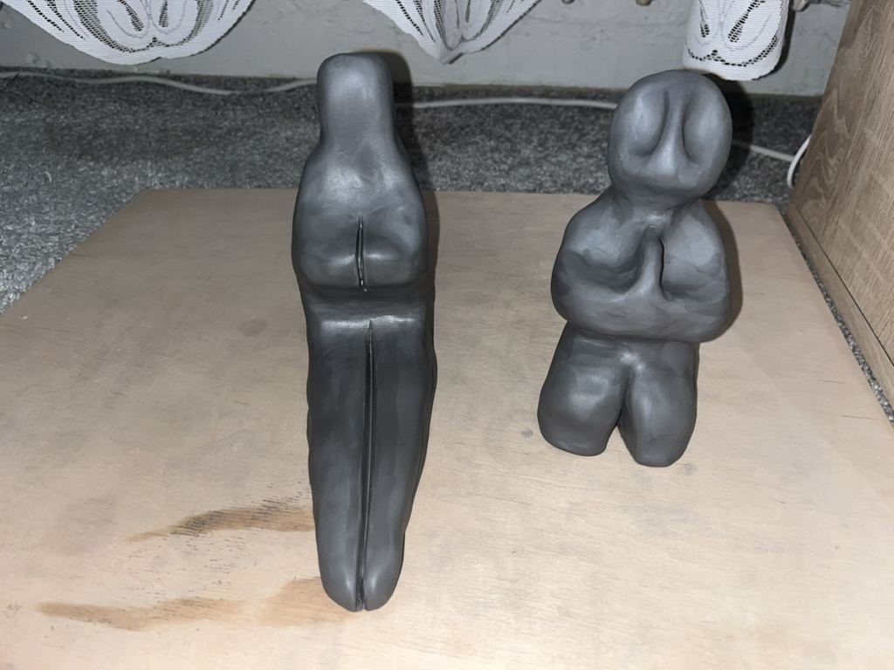
{kind=link}
18.květen
Ehmm, název není
Dnes jsem byl opět v práci. Poslední dobou se bavím tím, že si každý pracovní den dávám za cíl uzavřít všechny kroužky na hodinkách – taková malá výzva pro sebe. Největší výzvou je ale dávat si pozor na stání, to vždycky nejvíc zaskočí. :)
Večer mám hotovo – kroužky uzavřené. I přesto jsem si dal ještě 10 minut cvičení na břicho. Trochu mě to po cvičení přelilo, ale aspoň něco. Počasí venku tomu bohužel moc nepomáhá. Tma, chlad a déšť nejsou ideální na běhání, takže doufám, že se už brzy ukáže pořádné jaro.
Na závěr dne si dám ještě dechové cvičení a pak už rovnou do postele.
17.květen
Nechce se
Dnešní den byl takový pomalejší. Ráno bylo zataženo, odpoledne se počasí střídalo a celkově jsem se cítil trochu přešlý. Původně jsme plánovali jít na discgolf, ale počasí tomu moc nepřálo, takže se z dneška stal spíš válecí den.
Na oběd jsme si připravili panenku s těstovinami a pepřovou omáčkou – výborná kombinace. Po obědě jsem si dopřál espresso tonic, který mě aspoň trochu nakopl. Odpoledne jsme si zašli do cukrárny na kávu a zákusek, což bylo příjemné zpestření dne.
Večer jsme zakončili jemnou jógou a chystáme se na tatarák k večeři. Tak snad zítra bude o něco víc energie.
16.květen
Den radosti
Dnešní den mi udělal opravdu radost. Vyzvedl jsem si knihu StArt: Sport jako symbol ve výtvarném umění a také tisk na výstavu do Opavy. Pak jsme vyrazili plavat – naposledy jsem byl v bazénu v únoru, takže jsem si to po tak dlouhé době opravdu užil. Uplaval jsem 800 metrů, odpočinul si ve vířivce i v páře a celkově to bylo skvělé.
Pokračovali jsme obědem – měl jsem kuřecí kapsu se sýrem a šunkou a k tomu brambory v sýrové omáčce. Výborné a vydatné jídlo. A jako třešnička na dortu – dorazil mi nový iMac! Takže zbytek odpoledne trávím zprovozněním a nastavováním.
15.květen
U babičky
Dneska jsem využil volného dne a vyrazil navštívit babičku. Strávil jsem u ní celý den – bylo to klidné, milé a příjemně jiné tempo než obvykle. Domů jsem dorazil až kolem sedmé večer a den jsem zakončil jógou.
To je asi pro dnešek všechno. Ale zítra vyrážím plavat – už se těším! 🏊♂️
14.květen
Honzo, vstávej! Kolik je hodin? Je 4:11!!!
Vzbudil jsem se v noci ve 4:11 a od té doby jsem už neusnul. Během noci jsem si stihl objednat knihu StArt: Sport jako symbol ve výtvarném umění, na kterou jsem náhodou narazil z druhé ruky – za 500 Kč, což je parádní úlovek.
Kolem šesté ranní mě napadlo, že bych mohl jít darovat krev. Tak jsem se umyl a vyrazil na odběr na 8:00. Dnes to šlo rychle – moc dárců tam nebylo, takže jsem za 45 minut už odcházel. Jako obvykle jsem dostal spoustu poukazů a jeden speciální do místního bistra. Tam jsem si dal snídani: čokokoko dort (ano, tak dobrý, jak to zní), a na oběd kuřecí panini a croissant s lososem. Luxus!
V ateliéru jsme dořešovali výstavu v Opavě a rozpracovali další jednodenní akci, která bude zaměřená na panelákové prostředí. Já tam budu mít na starosti sportovní happening s během v paneláku a jógou – ale o tom víc příště, až to pořádně vymyslím a rozepíšu.
Po ateliéru jsem si vyzvedl novou knihu a zašel ještě do galerie. Na závěr dne jsme si dali espresso tonic – taková malá tečka za celým rušným dnem.
Teď už jsem doma, po sprše, po večeři, a pomalu se mi zavírají oči. Takže… dobrou noc.
13.květen
Odevzdáno a náhodně odběháno
Konečně! Dopoledne jsem si ještě jednou prošel celý text bakalářky, zkontroloval formátování, a pak jsem ji nahrál do systému. Takže téměř hotovo – teď už jen čekám na posudky od vedoucí a oponentky (9. června), a 18. června mě čeká obhajoba. A taky závod. :)
---
Ještě se musím vrátit k včerejšku. Vydal jsem se do galerie s tím, že si koupím knihu – úplně jsem ale zapomněl, že je pondělí a většina galerií má zavřeno. Vchod byl otevřený, tak jsem bez váhání vešel dovnitř a postavil se ke kase. Nikdo nikde. Potřeboval jsem i na záchod, tak jsem šel omrknout knihy a zjistil, že tu, kterou jsem chtěl, nemají. Po chvíli jsem se vydal směrem k toaletám, kde jsem potkal pár techniků a zaměstnanců. Nikdo si mě nevšímal, jakoby to bylo úplně normální. V ten moment mi došlo, že je fakt zavřeno. Neriskoval jsem, otočil jsem se a v tichosti odešel.
Dnes jsem chtěl opět vyběhnout – plán byl jednoduchý: jiná trasa, do kopce, zhruba 5 km. Jenže jsem se po dvou kilometrech ocitl v rokli plné běžců. Nejdřív jsem si myslel, že jde o nějaký kurz, ale čím blíž jsem byl, tím víc bylo jasné, že jde o závod. Byl to charitativní běh pro Julii. Tak jsem přispěl 250 korun a přidal se. Uběhl jsem 15 koleček (cca 9 km), a s příchodem do rokle to dalo přes 10 km. Výsledné tempo: 5’27’’, což je paráda – zvlášť s ohledem na to, že jsem si chtěl dát jen pohodových pět kiláků.
Teď už jen večeře, sprcha a postel. Přikládám ještě jednu fotku z běhu.
Dobrou noc! 🌙
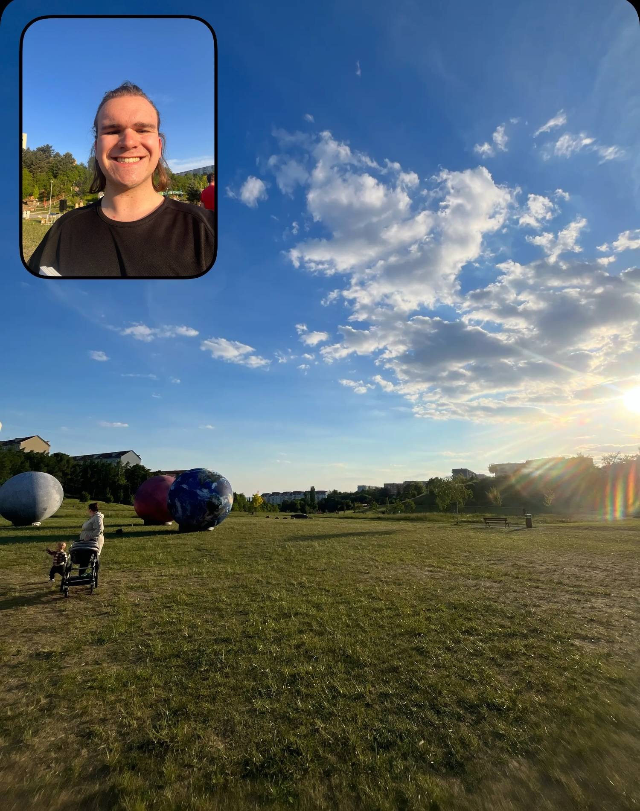
{kind=link}
12.květen
Focení, schůzování a běhání
Jak jsem plánoval, ráno jsem vyrazil do školy nafotit sošky do bakalářky. Zastavil jsem se také v keramické dílně, kde mě potěšilo, že se keramika krásně vypálila – hned jsem ji nafotil. Trochu jsem zariskoval, když jsem věšel boty na stěnu, protože náš ateliérový žebřík už má nejlepší časy za sebou.
Na oběd jsem si dal meníčko – výborné kuřecí kousky ve sladkokyselé omáčce s rýží. Odpoledne následovala schůzka ohledně nového projektu, který plánujeme na 14. června. Postupně budu přinášet další novinky.
Doma jsem si nejprve zacvičil jemnou jógu na zahřátí těla. Poté jsem vyrazil na 5km běh a i po třech týdnech bez běhání jsem byl mile překvapen tempem 5’18’’. Na závěr jsem si ještě zaposiloval venku na strojích. Dnešek mi potvrdil, že jsem pořád v dobré kondici. :)


11.květen
Práce a plán na další den
Dnes jsem byl opět v práci, ale využil jsem příležitosti a dost jsem nachodil. Doma jsem si ještě dal power jógu, ale tentokrát mě to nějak nebavilo.
Na zítřek už mám jasný plán – vyrazím do školy dofotit sošky a nahrát fotky do bakalářky. Možná ji už zítra, nebo nejpozději pozítří, konečně odevzdám.
A taky bych rád zítra konečně vyrazil běhat. Tak mi držte palce!
10.květen
Krátce
Další pracovní víkend za mnou. Dnešek nebyl nijak zvlášť záživný, a tak dnešní příspěvek zakončím jednoduše a krátce.
9.květen
Discgolf
Probudil jsem se dřív, než jsem plánoval, a tak jsem ještě v posteli dočetl knihu. Poté jsme posnídali a dali si jógu zaměřenou na strečink. K obědu jsme si připravili řízečky a po obědě jsme si dopřáli espresso tonic.
Odpoledne jsme konečně vyrazili na discgolf. Poprvé jsem ho zkoušel už na základce a od té doby nic. Na hřišti nás čekalo šest jamek. První jamka byla docela náročná, protože byla schovaná za křovím, takže jsme ji museli spíš doházet. Další jamky už byly po rovině, takže se daly zvládnout lépe. Náročnější pak byla jamka vedoucí do kopce.
Celkově jsem na šesti jamkách nasbíral 25 bodů, přičemž ideální skóre je 18. Myslím, že na první hru je to docela slušné. Už teď ale vím, že budeme muset objednat další disky — ten, který jsem koupil, je vhodný spíš na kratší vzdálenosti a dohazování. Takže ještě dokoupím jeden na delší hody.
Po hře jsme si dali zmrzlinu a vyrazili domů. K večeři jsme si připravili vafle s Gervais a lososem.

8.květen
Do města
Znovu jsem dospravoval text a odeslal ho ke konzultaci. Během dne jsme vyrazili do města na jídlo. Šli jsme ochutnat jídlo v nově otevřeném fastfoodu. Osobně nejsem velkým příznivcem fastfoodu, ale občas si v nouzi nějaké takové jídlo dám. Tentokrát to ale byla spíše návštěva ze zvědavosti. Musím uznat, že mě sendvič opravdu nadchl — maso bylo vážně výborné. Ale tahle návštěva mi na nějakou dobu stačila.
Po jídle jsme ještě navštívili pár výstav a stavili se nakoupit ve Vilgainu.
Původně jsme měli v plánu ještě diskgolf, ale foukal silný vítr, takže jsme nakonec jeli domů a udělali si pizzu z Vilgainu.
7.květen
Blížíme se ke konci
Jak se semestr pomalu blíží ke konci, také postupně ukončujeme práci na výstavě v Opavě. Zároveň už pomalu dokončuji i svou bakalářskou práci. Dnes jsem proto odešel z ateliéru o něco dříve, abych měl možnost zajít do knihovny a načerpat teoretický základ pro text.
Domů jsem dorazil poměrně pozdě, a tak jsem si dal jen kratší večerní jógu. Poté jsem ještě pokračoval v psaní. Teď už je 23 hodin a já teprve teď mířím do sprchy — a pak už asi rovnou do postele.
6.květen
Jako včera
Dnešní den byl téměř stejný jako ten včerejší. Ráno jsem začal jógou, kterou jsem tentokrát doplnil o cvičení s tyčí. Poté jsem se pustil do psaní bakalářky. K tomu jsem si připravil espresso tonic a během přestávek jsem si pustil seriál.
Zítra mě ale čeká ateliér, tak přijde alespoň nějaká změna. :)
5.květen
Všude samá jóga a psaní
Dnešní volný den jsem si naplánoval opravdu nabitě, takže jsem vstával už v 8 ráno. Dal jsem si kávičku a müsli s jogurtem. Naskenoval jsem si skicák, který chci vložit do bakalářky, a potom jsem si dal hodinu jógy. Zvolil jsem jógu na silný core a protažení kyčlí. Po třech týdnech bez pravidelného pohybu to bylo opravdu intenzivní cvičení, které jsem si ale užil – jen mě pak celý den bolela záda, lopatky i další svaly.
Zbytek dopoledne a celé odpoledne jsem věnoval psaní. Po konzultacích jsem dostal spoustu podkladů, takže bylo co doplňovat a upravovat. Do psaní jsem se ponořil tak, že jsem úplně zapomněl na oběd a najedl se až kolem půl třetí.
Po obědě jsem se konečně vrhl na tvorbu sošek. Jak jsem slíbil, vytvořil jsem pozici tanečníka. Poté jsem se pustil do geometrické formy – pozice trojúhelníku. A když mi zbyla hlína, spontánně vznikla další soška – meditační postava se zkříženýma nohama a spojenýma dlaněmi. Pojmenoval jsem ji Namasté. Možná je to znamení, že tvorbu sošek je čas uzavřít. Právě touto pozicí totiž obvykle končím svá jógová cvičení.
Dnes přikládám i video pro STRONG CORE.
Namasté. 🙏
4.květen
Lilo a lilo
Další den v práci, ale zbytek týdne mám volno – čeká mě jen středeční ateliér. Takže mám dost času na dopsání bakalářky, tvorbu sošek a dolaďování detailů.
V práci bylo opět klidno, protože bylo zataženo a sem tam i sprchlo.
Po práci jsem jel rovnou domů. Nos už mám volný a cítím se dobře, takže jsem si konečně mohl dát trochu náročnější jógu zaměřenou na posílení středu těla. Pot ze mě doslova lil. Po tolika dnech bez pořádného pohybu mi to dalo fakt zabrat, ale i přesto – i když jsem rozlámaný – se cítím svěže.
3.květen
Dodělání restů
Dnešní den trávím v práci na objektu, kde mám poměrně volnější režim. Využil jsem proto čas k editaci fotek z dětského dne – musel jsem se prohrabat zhruba 350 snímky. Zároveň jsem udělal úklid v počítači a fotky roztřídil.
Pokračoval jsem i v psaní bakalářské práce, kterou jsem si zároveň i naformátoval. Musím přiznat, že jsem už z toho psaní celkem unavený, takže dnešní příspěvek bude kratší.
2.květen
Úklid. Pes hlavou dolů a příprava jídel
Dneska mě čekalo hodně práce doma, protože jsem tu pár dní nebyl. Musel jsem tedy poklidit a postarat se o kytky.
Odpoledne jsem si dal 30 minut power jógy. Rýma mě bohužel ještě úplně nepustila, takže pozice psa hlavou dolů byla trochu náročnější – nos se mi hned naplnil. :) Doufám, že už to brzy odezní. Musím se ale pochlubit, že se mi dnes celkem dařila pozice tanečníka – pravděpodobně bude další, kterou zrealizuji jako sošku. Momentálně mám hotových už 17 sošek.
K večeři jsme si připravili výbornou pizzu z placek od Vilgainu a na zítřek jsme nachystali těstovinový salát se zeleninou a tofu.
Jako bonus ještě přidám písničku, která nám hrála ve středu na workshopu.
1.květen
Tábornický dětský den
Začal nový měsíc a hned první den se nesl ve znamení tábornického dětského dne, který jsme pořádali. Vyrazil jsem už v 8:30, abych pomohl s organizací, a od 9:30 začali přicházet rodiče s dětmi.
Počasí nám přálo, což podtrhlo celou atmosféru. Na jednotlivých stanovištích si děti mohly vyzkoušet první pomoc, zatloukání hřebíků, střelbu z luku, nebo si postavit vlastní stan. Nechyběl ani opravdový táborový stan. Navíc jsme měli skákací hrad a opékali špekáčky.
Celý den byl skvělý, plný radosti a pohybu. Po akci jsme vyrazili na oslavu na pizzu – ta bohužel příliš nenadchla, ale náladu nám to nepokazilo.
Duben
30.duben
Ateliéros a divadlo
Další ateliérová středa. Tentokrát jsme začali pohybovým workshopem. Bohužel jsem se nedokázal úplně uvolnit, což nejspíš způsobil zbytek únavy a vyčerpání z nemoci. Nakonec jsem se ale přece jen zapojil.
Následovala diskuze o výstavě a společné konzultace. Musel jsem však odejít dřív, protože jsme večer zamířili do divadla na představení Doma u Hitlerů aneb Historky z Hitlerovic kuchyně.
Představení bylo zajímavé a obsahovalo hodně "čecháčského" humoru. Občas jsem se taky zasmál, ale čekal jsem, že děj i celková zábavnost budou trochu jiné.
29.duben
Výstava, workshop, přednáška a sošky
Dnes se mi podařilo vstát brzy, i když jsem do školy dorazil o 9 minut později. Ale to nevadí. Všechna díla jsme naložili a vyrazili na fakultu, kde probíhá výstava. Tam jsme během hodiny vše nainstalovali a já jsem se zúčastnil workshopu Na 5 minut seniorem, kde jsem si vyzkoušel gerontooblek – oblek, který simuluje pocity a fyzická omezení, jaké prožívají starší lidé.
Po workshopu jsem se vydal do centra na nákup a oběd. Pak už následovala další část dne — přednáška a následně prezentace výstavy.
Po skončení jsem se pomalu vydal domů.
Doma se mi podařilo vytvořit rekordní počet čtyř sošek za jeden večer! Teď už jen dokončuji zápis a jdu spát. :)
28.duben
Vyšťaveno
Už je večer a já jsem opravdu vyšťavený.Dneska jsem byl na školení, ze kterého jsem odcházel dost zklamaný — připadalo mi, že informace nebyly dostatečně kvalitní a že první pomoc znám lépe z jiných kurzů, kde nám ji předali srozumitelnější formou.
Po školení jsem se ještě stavil ve škole, kde jsem přes keramiku přehodil prostěradlo pro lepší schnutí, a pak jsme šli na oběd. Ten mě ale nijak zvlášť nenadchl ani neurazil.Domů jsem dorazil po páté hodině, dal si půl hodinky jemné jógy, a chtěl jsem se pustit do tvorby dalších sošek, ale dnes už na to prostě nemám sílu.Zítra mě čeká brzké vstávání, protože instalujeme výstavu v Brně, takže potřebuji alespoň trochu odpočinku.
Uvědomuji si, že jsem poslední dny zanedbával čtení Tao a knih o józe, stejně jako pořádné cvičení. Bohužel to teď musí jít na chvíli stranou.
V příštích třech týdnech ze sebe musím vydat maximum, abych dokončil bakalářku. Mým cílem je do 14. 5. všechno zvládnout... a 15. 5. si dát relaxační den věnovaný sobě, sportu, Tao a klidu.
27.duben
Cheat day
Ráno jsem vstal až po deváté hodině — konečně jsem se pořádně vyspal.
K obědu jsme si připravili skvělé burgery a po jídle jsme vyrazili na chemex. Bohužel nás zaskočila zpráva, že jej zrušili, takže jsem si dal alespoň espresso tonic.
Později jsme si dopřáli ještě zmrzlinu a zákusek, takže dneska proběhl takový pravý cheat day.
Rýma už pomalu ustupuje a bolest v krku taky, tak snad budu v nejbližších dnech zase úplně fit.
26.duben
Bez názvu
Po týdnu, kdy mě provázela smutná nálada po těžkém oznámení, přišel den rozloučení.
Teď už začínám cítit klid a úlevu. Všechny myšlenky i pocity se z mé hlavy pomalu vytrácejí.
- - -
Večer jsem si dopřál jemnou jógu, při které jsem uvolnil své tělo i mysl.
25.duben
Bílá
Už zase jsem brzy vstával, abych zajel do školy. Tam jsem natíral keramickou desku s trasou na bílo — a musím říct, že to vypadá opravdu solidně. Dneska k příspěvku přiložím i fotku desky.
Poté jsem si koupil mraženou pizzu, protože jsem už nestíhal uvařit nic normálního, jelikož mě čekala ještě práce.
Těším se na neděli, kdy si konečně trochu víc odpočinu. Poslední týden toho na mě bylo nějak moc a už se cítím fyzicky i mentálně dost unavený.
Nemoc se mě stále drží — pořád smrkám a kašlu. Sport už jsem vynechal skoro týden, ale proces uzdravování nesmím uspěchat.
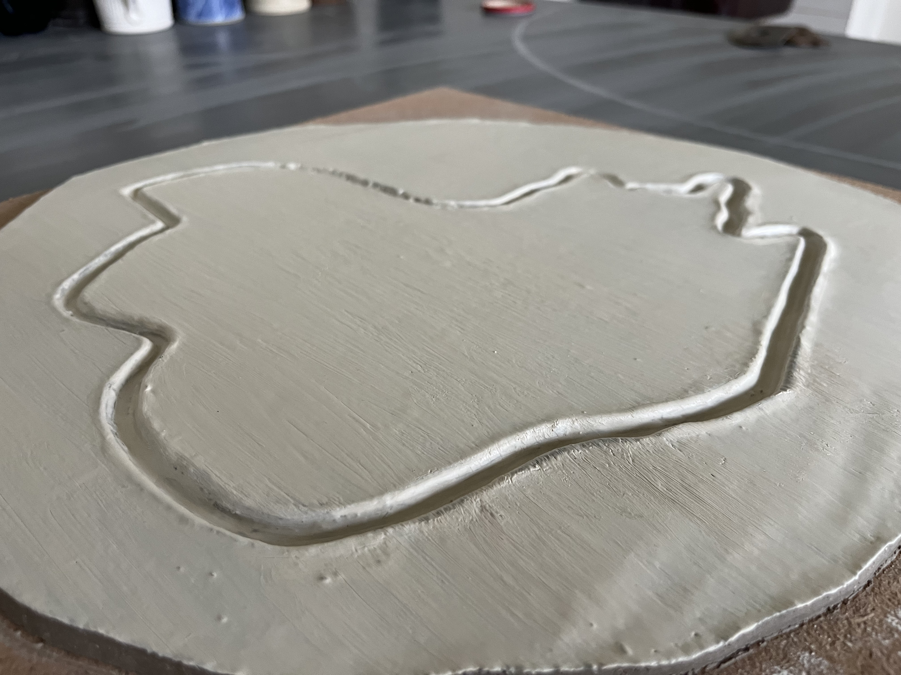
{kind=link}
24.duben
Krok za krokem
Po probuzení mi bylo celkem fajn. Umyl jsem se, najedl, vzal si prášky a vitamíny. Skočil jsem si do obchodu pro oběd a pak vyrazil do práce. Tam jsem začal s přenášením krabic mezi dvěma objekty — dohromady jsem to ušel asi dvanáctkrát. Po tomhle maratonu jsem měl už dopoledne nachozeno 10 000 kroků, což považuju za slušný úspěch takhle brzy.
Po obědě už mě nic zásadního nečekalo, takže jsem v klidu obsluhoval a četl si novou knihu Démonologové.
Teď už se pomalu chystám na večeři a zasloužený odpočinek.
23.duben
Keramičení
Nemoc bohužel stále přetrvává. Tentokrát se mi však přesunula do ucha, ve kterém mi nově hučí. Naštěstí už nemám teplotu a bolest v krku je jen slabá, zato rýma pořád jede naplno.
Dneska jsem jel na ateliér, vezl jsem si s sebou hlínu a další pomůcky, protože jsem měl v plánu začít dělat podstavec a trasu pro dílo Pot & krev, o kterém jsem tu už dříve psal. Den se nesl ve znamení focení modela podle nové koncepce. Zatím to vypadá slibně – ale nic víc zatím neprozradím. :)
Zbytek dne jsem strávil v keramické dílně, kde jsem si fakt dost máknul. Vytvořil jsem krásný podstavec – mísu s nohama, na kterou přijde "talíř" s trasou. Dneska ještě nebudu sdílet, jak podstavec vypadá – to si nechám na jindy.
Teď už jsem doma a jdu si lehnout, ať se trochu zregeneruju. Zítra mě čeká den v práci a už teď vím, že se ze začátku dost nachodím, protože budu přecházet mezi dvěma objekty. Ale o tom zase zítra. Čauo!
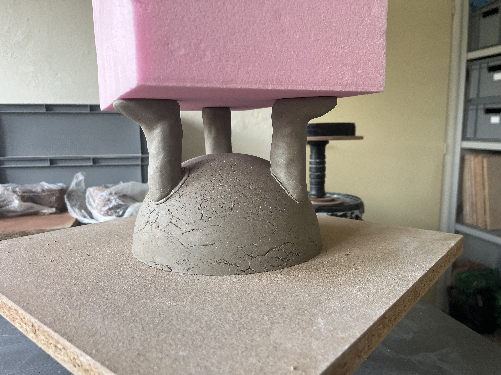
{kind=link}
22.duben
Hlína a tvorba
Ráno jsem vyrazil pro novou hlínu na tvoření figurek a tras. Dal jsem si jemnou jógu, což mi během nemoci opravdu bodlo po tolika dnech bez pohybu. Stále mám rýmu a beru léky, ale už se cítím lépe.
Během dneška jsem vytvořil další tři sošky. Jedna z nich je pozice stromu, kterou jsem dělal už podruhé – tentokrát však inspirován textem z mé nové knihy, kterou jsem doporučoval. Pozici jsem si zároveň i zacvičil a díky tomu jsem ji tentokrát vnímal úplně jinak.
Další dvě sošky představují pozice loďky a vrány. Jakmile budu mít možnost, určitě je vyfotím a podělím se.
21.duben
Velikonoční pondělí stále nemocné
Velikonoční pondělí trávím v práci a nemoc se mě bohužel stále drží. :(
Snad už se to zítra konečně zlomí a bude líp.
20.duben
Nemocné narozeniny
Dneska je můj velký den – slavím 24. narozeniny. Bohužel jsem stále nemocný.
Dostal jsem ale pěkné dárky a výborný pistáciový dort. Na oběd jsme alespoň vyrazili na burger a poté na krátkou procházku. Venku se mi udělalo celkem dobře, i když jsem za celý den do sebe musel nacpat spoustu léků.
Kašel a bolest v krku už trochu polevují, ale rýma mě zatím drží. Tentokrát si chci dát opravdu dostatek času na uzdravení, než se zase vrhnu do náročnějšího sportu. Začnu spíš zlehka – nějakou protahovací jógou.
19.duben
Nemocný
Tak já už fakt nevím! Poněkolikáté za tento rok mě skolila nemoc. A začínám být z toho opravdu frustrovaný. Bolí mě v krku, rýma mě dohání k šílenství a teď na mě začíná lézt i teplota.
Jednou z příčin je zřejmě aprílové počasí – jeden den 20 stupňů, další den 8. Ráno zima, přes den teplo, a člověk nikdy neví, jak se správně obléct. Navíc jsem v práci mrznul, což mi taky zrovna nepřidalo.
Na druhou stranu, aspoň jsme dnes stihli obejít pár výstav, které byly opravdu zajímavé. A večer jsme si zašli do Forkys a pak do vegan bistra na večeři. Teď už jsme doma, koukáme na seriál a asi si dáme popcorn. Zalil jsem si čaj a plánuju jen odpočívat. Tělo si to očividně žádá.
18.duben
Velký pátek
Dnes je Velký pátek a já pracuji za 100% příplatek. Což by bylo celkem fajn, kdyby mi nebylo pod psa. Bohužel jsem pravděpodobně včera nachladl – od rána mě bolí v krku a ten pocit se mě drží celý den. Takže dnešní večer patří odpočinku, čaji a teplé dece. Doufám, že se to přes noc zlepší.
17.duben
Práce a knihy
Dnešek byl pracovní den s velkým P. Už cestou do práce jsem splnil svůj denní kroužek cvičení – stoupání do kopce se totiž počítá! V práci jsme se pořádně zapotili, protože po rekonstrukci bylo třeba všechno nachystat na velikonoční provoz. Lítal jsem přes celý hrad, nosil věci ze skladů a měl pocit, že si dávám další tréninkový blok.
Po práci jsem si vyzvedl dvě nové knihy. První je Sport je umění od Petra Wolfa – mám velké očekávání, protože právě on stojí za platformou Sport in Art. Jsem zvědavý, co v knize rozvine.
Druhou knihou je Ásana jako symbol, která se věnuje jednotlivým jógovým pozicím a jejich významu. Už se těším, až se do ní ponořím.
Určitě dám vědět, jaké knihy jsou a případně je přidám mezi čtenářské tipy.
16.duben
Včerejšek, focení a cvičení
Včerejší plán se mi podařilo celkem úspěšně naplnit. Zacvičil jsem si jógu a stihl vytvořit tři nové sošky. Divadlo bylo velmi povedené – Maryša měla silnou atmosféru a výborné herecké výkony. Jelikož jsme před představením nestihli večeři, zašli jsme po divadle do veganského podniku, kde si člověk nabírá jídlo sám a platí podle váhy. Jídlo bylo celkem fajn, až na pár drobných nedostatků.
Dnešní den se nesl v ateliérovém duchu – fotili jsme projekt pro nadcházející výstavu. Bylo to dost záživné, protože jsme se všichni učili pracovat se světlem i s modelem. Myslím, že výsledek bude stát opravdu za to.
Večer, jakmile jsem dorazil domů, jsem ještě vyrazil na běh. Dal jsem si svou obvyklou pětku a povedlo se mi znovu zlepšit tempo – 5’11’’! Kadenci jsem udržel na 188 kroků za minutu. Po běhu jsem si ještě zacvičil na venkovních strojích ve více opakováních a zakončil to krátkou procházkou.
15.duben
Plán a vnitřní boj
Dnešní příspěvek bude trochu netradiční, protože večer jdu do divadla na Maryšu a nejsem si jistý, jestli budu schopen ještě něco večer nahrát. Rozhodl jsem se proto napsat zápis už ráno – jako plán dne.
V plánu mám pokračovat na soškách jógových asán. Zároveň si chci dopřát alespoň hodinovou jógu, abych se pořádně protáhl, a pak na 17:30 vyrazit do divadla. Naštěstí dnes není program nijak přecpaný.
Chci se ale podělit i o něco osobnějšího – své současné mentální rozpoložení. Včera jsem zapomněl zmínit, že právě včera to byl přesně měsíc do odevzdání bakalářské práce. A tohle vědomí mě teď v noci trochu pronásleduje. Stal jsem se svým vlastním nepřítelem. V hlavě mi běží tisíce myšlenek. I když si říkám, že to všechno zvládnu, pořád se objevují pochybnosti. Krátící se čas. Obavy, že se sošky nepovedou. Že nebude fungovat dílo Pot & Krev. Promítám si průběh obhajoby. Zpochybňuju, jestli je text práce dost dobrý.
Snažím se s tím bojovat, ale není to jednoduché. Myslím si, že tyto obavy pramení hlavně z toho, že jsem do projektu dal skutečně všechno – jako sportovec do svého výkonu. Pracuji na sobě, tvořím, přemýšlím. Tenhle rok pro mě byl obrovsky inspirativní. Získal jsem spoustu zkušeností. Objevily se nové nápady i nové směry, kam dál.
A proto vím, že musím bojovat až do konce. Nejen proti časové tísni, ale i sám se sebou. Protože už jsem ušel velký kus cesty – a ten nechci jen tak zahodit.
Pokud si někdy procházíte něčím podobným, neberte to jako překážku. Uvolněte se a pokračujte. Každý start má svůj cíl.
(Tahle běžecká metafora se mi docela povedla, že jo? 😊)
Jsem rád, že můžu sdílet i svoje obavy a nejistoty. Protože právě ty tvoří součást cesty stejně jako úspěchy.
14.duben
Osobní rekord
Tak jsem se překonal!
Dnes jsem měl tempo 5’13’’ a průměrnou kadenci jsem zvedl na 188 kroků za minutu. Když jsem vyrážel, říkal jsem si, že jsem na to dost unavený, ale i tak jsem pokračoval – protože jsem na hodinkách viděl, že mám opravdu skvělé tempo. Běžel jsem s pocitem, že dnes padne nový osobní rekord.
Cítil jsem ale, že mi dnešních 5 kilometrů úplně stačilo – ještě nejsem úplně zregenerovaný po víkendovém výběhu.
Zároveň jsem si dal i půlhodinu jógy na strečink, venku po běhu pár cviků na strojích a doma ještě posilování na břicho.
Nyní je už večer a jsem dost unavený. Po cvičení jsem ještě jel do školy odvézt věci a poté k zubařce. Venku bylo nádherné jarní počasí, a tak jsme si s Olliem dali zmrzlinu. :)
Stále pracuji na textu bakalářské práce, takže večer jsem věnoval psaní. A za odměnu si teď pustím seriál, možná si trochu zamedituji – a pak šup do postele.
13.duben
Jóga flow aneb loučení s karimatkou
Dnes mě čekalo spoustu práce na připravovaném díle – Rozloučení s karimatkou. Ráno jsem si sedl a sepsal malý scénář pozic, které budu provádět. Pro začátek jsem sáhl po kartičkách, které jsem koupil v Pepcu. Jenže výběr pozic na kartách byl poměrně omezený, takže jsem přešel k prohlížení různých videí a jógových asán.
Doma jsem si svou připravenou jógovou flow otestoval – zabrala mi 30 minut.
Jakmile dorazil Ollie, vyrazili jsme do nedalekého lesíku. Rozložil jsem si karimatku na zem a nachystal čtyři barvy: modrou a zelenou na ruce, žlutou a červenou na nohy. Vypaplal jsem se v barvách a začal.
Tahle jógová flow „naostro“ zabrala asi 20 minut – nejspíš i proto, že jsem v pozicích nevydržel tak dlouho jako doma. Občas mi podkluzovaly ruce nebo nohy v barvách.
Ale myslím si, že výsledek stojí za to. :)


12.duben
Chvátám, chvátám, nemám chvíli čas
Je tu sobota a mám volný den. Ráno jsem si dal kávičku. Venku bylo trochu zataženo, tak jsem se rozhodl, že si tentokrát zacvičím doma a nepůjdu běhat ven. Začal jsem posilovací jógou, která mi dala zabrat, ale byla velmi záživná.
Během cvičení se venku poměrně vyjasnilo, a tak jsem se rychle převlékl do běžeckého a vyrazil na malý okruh. Po prvních dvou kilometrech jsem zjistil, že mám výborné tempo, slunce hřálo a já cítil spoustu energie. Nezbylo nic jiného než si trasu trochu obzvláštnit a běžet jinam.
Vydal jsem se z kopce. Běh z prudkého kopce je velmi náročný, protože se musím neustále vybržďovat. Nakonec jsem zaběhl trasu 7 kilometrů až k Arnoldově vile. Tam jsem si na chvilku odpočinul a pak se vydal na zpáteční trasu. Dal jsem ještě 4 kilometry a před kopcem naskočil na MHD a jel domů. Takže jsem dneska zvládl skoro 12 kilometrů.
Po běhu jsem si dal zmrzlinu – už jsem fakt potřeboval doplnit energii. Doma jsem to ještě zakončil posilováním na břicho. To už bylo najednou pět hodin a já si uvědomil, že jsem vlastně vůbec neobědval. Dal jsem si mango a uvařil své oblíbené těstoviny po Lotrinsku.
Bohužel jsem se dnes nedostal k soškám, ale volné dny mám ještě v pondělí a úterý. Zítra mě čeká umělecké rozloučení s karimatkou. :)
11.duben
Další den nudy
Dneska jsem byl znovu v práci. Zítra si však hodlám trochu více zacvičit a dělat sošky.
10.duben
Nuuuuda
Dnešní den byl... no, nuda. Ani jóga mě tentokrát nebavila. Někdy se to prostě stane. Dnešní blog utnu tady.
9.duben
Překonávání
Ráno mě čekala preventivní prohlídka. Tlak mám skvělý a na výsledky z krve si mám zavolat zítra. Hned po návštěvě u doktorky jsem zamířil do školy na ateliér – vyklízeli jsme sklad a chystali vše na příští týden, kdy nás čeká focení.
Domů jsem dorazil kolem páté. Rychle jsem se převlékl, dal si ionťák a proteinovou tyčinku a vyrazil ven. Hned na začátku mě čekal výšlap – první dva kilometry jsem běžel do kopce, vystoupal jsem 122 výškových metrů. Pak už mě čekal mírnější terén a nakonec seběh.
Když jsem dokončil okruh, měl jsem za sebou pět kilometrů, ale říkal jsem si, že dnes ještě nekončím. Rozhodl jsem se pokračovat. Překonal jsem včerejší vzdálenost… a nakonec zdolal rovných 10 kilometrů za 56 minut.
Cítím se opravdu dobře i s ohledem na blížící se závod. Jestli jsem zvládl desítku v kopcovitém terénu s tempem 5’38’’, tak po rovině ten čas musím ještě stáhnout. :)
8.duben
Produktivní den
Je pozdě večer a ráno brzy vstávám. Dnešní den byl natolik produktivní, že jsem se ani nestihl pořádně zastavit. Po probuzení jsem si dal kávu a vyčistil zuby. Hned nato ranní jógu, která trvala téměř hodinu.
Po józe jsem vyrazil na běh. Běžel jsem svou obvyklou trasu, ale ani po pátém kilometru jsem neměl dost, tak jsem pokračoval dál. Nakonec z toho bylo 7,25 km s tempem 5’31’’. Tradičně jsem zakončil venkovními stroji a doma přidal cviky na břicho.
K obědu jsem měl trhané maso v tortille. Hned po jídle jsem pokračoval v práci na soškách – dnes jsem vytvořil dvě nové.
Odpoledne jsem ještě vyrazil do města pro věci na projekt a večer mě čekala táborová schůzka. Teď je deset večer a pomalu se chystám spát – zítra mě čeká ranní preventivní prohlídka.
7.duben
Short story
Do práce, z práce. Kniha dočtena. Jóga odcvičena. Kapitola z Tao přečtena.
6.duben
Odpočinkový den
Dneska jsme spali až do devíti. Bylo to vážně krásné se takhle pořádně prospat. Sami jsme si naordinovali odpočinkový den, kdy jsme nic moc nedělali.
Po obědě jsme vyrazili na kávu do našeho oblíbeného podniku. Dali jsme si klasický chemex a zase se vydali na procházku. Prošli jsme se hezky, ale venku je pořád zima, takže to nebylo úplně pohodlné. Ale nevadí.
Zítra mě čeká práce, takže toho moc neplánuju. Ale v úterý bych chtěl jít běhat, dát si pořádnou jógu a zase pokročit na soškách.
5.duben
Praha a výstavy
Po včerejším koncertu jsme se moc nevyspali. Vstávali jsme brzy a vyrazili do Prahy. Tam nás hned po příjezdu čekalo překvapení – v ulicích právě probíhal půlmaraton. Zasedli jsme do kavárny, odkud jsme běžce pozorovali, tiše je podporovali a obdivovali. Možná si příští rok ten půlmaraton taky zaběhneme.
Po kávě jsme se vydali na první výstavu dne – Art Grand Slam ve SmetanaQ. Výstava byla plná děl od známých autorů, ale také od výherců opencallu. Celkově působila velmi dobře – silně a vyváženě. Možná bych jednoho z autorů vynechal, protože mi úplně nezapadal do celkové koncepce, ale jinak rozhodně zajímavý zážitek. Příští rok bych se do tohoto opencallu rád přihlásil se svým projektem.
Pak jsme pokračovali na aktuální výstavy v Rudolfinu a U Zvonu. Obě byly pro mě velmi zajímavé a inspirativní, zvlášť s ohledem na budoucí tvorbu v magisterském studiu.
Na oběd jsme dali burger a večer nás čekaly výtečné plněné knedlíky. Teď už jedeme domů a těšíme se na večerní pohodu s filmem od Studia Ghibli.
Ještě přikládám jednu fotku obrazu od Lindy Klimentové ze dneška, tak zatím čauio! 🎨🚆🍜

4.duben
Z práce na koncert
Dnešní pracovní den jsem strávil na jiném objektu muzea, kde jsem byl poprvé. Den byl dlouhý, ale venku bylo krásně – jen jsme bohužel pracovali v průvanu. Během dne jsem několikrát vyběhal všechna patra vily. :)
Po práci jsme zašli na večeři do zdravého fastfoodu Vilgain. Složili jsme si vlastní poke bowl a ochutnal jsem výborný falafel. Koupili jsme si také proteinovou tyčinku na zítřejší cestu do Prahy a vyrazili dál.
Pak už následoval koncert Ventolina. Bohužel jsem si ho neužil tak jako třeba koncert Midilidi. V klubu bylo strašně moc lidí a světelné efekty nám často mířily přímo do očí – jako kdybych koukal do slunce. Trochu mě mrzelo, že jsem si kvůli davu nemohl pořádně zatančit. Tak snad příště – třeba na jiném místě nebo na nějakém venkovním festivalu.
3.duben
Po práci běhání
Ráno jsem si v hlavě nastavil, že dnes cvičit nebudu, protože mám směnu v práci. Ono se to nezdá, ale 9,5hodinová směna je opravdu dlouhá a zabere spoustu času z celého dne. Po cestě domů jsem se zastavil pro kvalitní čokoládu s vyšším obsahem kakaa a pak už jsem jel domů.
Když jsem ale z okna šaliny pozoroval zapadající slunce a uvědomil si, jak je venku příjemně, začal jsem se přemlouvat, že bych přece jen mohl jít běhat.
Jakmile jsem dorazil domů, zběsile jsem se vyzul, odhodil batoh, vyčůral se, převlékl, napil se, přehodil hudební playlist a vyrazil. Hned od startu mě čekal výběh do kopce, ale zvládl jsem ho s dobrým tempem. Tyhle úseky se mi běhají čím dál lépe. V polovině cesty jsem měl před sebou výhled na zapadající slunce, který jsem si náramně užil.
Dnešní běh jsem raději ukončil na 4 kilometrech – nechtěl jsem to po tolika dnech nemoci a následného zotavování přehnat. Ještě jsem si trochu zacvičil na venkovních strojích a pak už jsem šel domů. Mám ze sebe velkou radost, protože jsem i tak dokázal vydat dost energie a úsilí.
2.duben
Ateliér a váha
Ráno jsem vyrazil do ateliéru. Měli jsme setkání s kurátorkou z galerie, ve které budeme připravovat část výstavy. Po setkání následovala velmi plodná diskuze. Prozatím ale nebudu nic prozrazovat – až přijde správný čas, dám vědět.
Poté jsem si dal dobrý veganský oběd – omáčku se zeleninou, rýží a tempehem. Po obědě už nadešel čas konzultací, během nichž jsem řešil ještě některé dodatečné záležitosti k bakalářce. Pak jsem vyrazil do města nakoupit potřebné věci na realizaci.
Cestou domů jsem si vyzvedl v boxu novou váhu, protože ta stará mi včera přestala fungovat. Tentokrát jsem si pořídil „chytrou“ váhu, která měří hmotnost, BMI, tělesný tuk, hmotnost kostí, metabolický věk a spoustu dalších údajů. Byl jsem docela polichocen výsledkem – můj metabolický věk vyšel na 24 let, což mi za 18 dní opravdu bude. Váha mi také ukázala o dvě kila méně než při posledním vážení, což beru jako plus. I když je dost možné, že je to prostě rozdílem mezi starou a novou váhou. :)
Dneska jsem už nic necvičil, protože mi navečer nebylo úplně dobře. Potřebuji se hlavně pořádně vyspat – v noci jsem nemohl usnout a spal jsem jen 5 hodin a 16 minut.
1.duben
Pes hlavou dolů
Koupil jsem si novou knihu Terapie jógou od Kateřiny Černé. Jsem velmi zvědavý, jaká bude, ale zatím, co jsem ji prolistoval, vypadá spíše zaměřená na meditační cvičení a jógové uvolnění. Určitě dám vědět, jaká je, a možná ji přidám i k doporučením.
Dnes už se cítím lépe, a tak jsem se rozhodl pro hodinovou lekci jógy, abych pořádně protáhl své tělo. Po těch pár dnech lehčího cvičení mi to dalo zabrat, ale zároveň cítím velkou úlevu a motivaci.
Hned po docvičení jsem se pustil do tvorby nové sošky Psa hlavou dolů. Soustředil jsem se pouze na tuto jednu pozici, protože mi v dnešní lekci připadala jako největší výzva. Navíc cítím, že se v ní stále zlepšuji – stoj je pevnější, výdrž i síla rukou a nohou se zvyšuje, a kostrč se mi daří dostávat výš. Z dnešního dne mám opravdu radost.
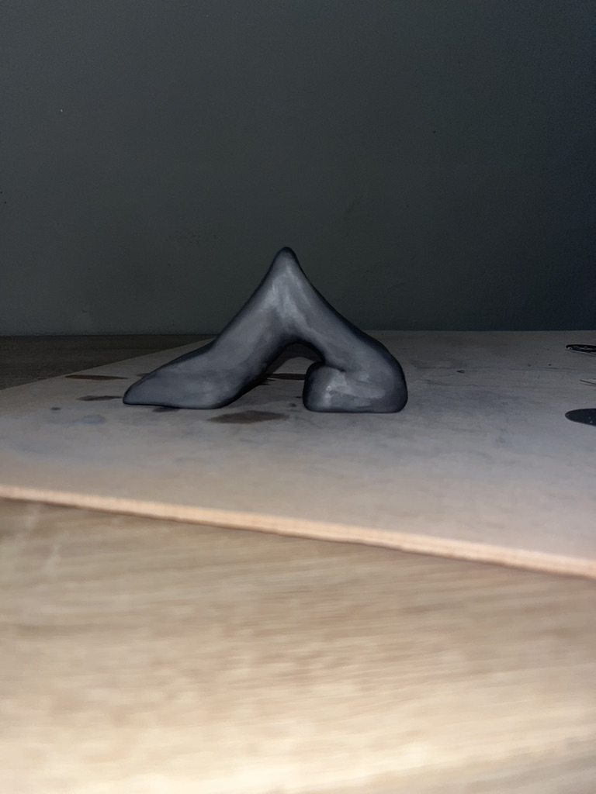
{kind=link}
Březen
31.březen
Práce, rýma a jóga
Poslední březnový den jsem strávil v práci. Rýma se mě stále drží, takže bych dnes stejně necvičil. Je fascinující, jak jediná nemoc dokáže úplně rozhodit režim.
Teď večer jsem si dal 25 minut jógy určené pro nemocné a cítím, jak jsem celý ztuhlý. Obávám se, že bude chvíli trvat, než se zase pořádně rozhýbu.
30.březen
Práce a únava
Dnešní ráno bylo o něco lepší. Po snídani jsme vyrazili do práce. Díky hezkému počasí chodilo spoustu lidí – ale to se vlastně dalo čekat, památková sezóna už pomalu klepe na dveře. :)
Po práci jsem si doma dal strečinkovou jógu na protažení. A tím dnešní den nejspíš uzavřu, protože na sobě ještě cítím únavu. Takže si přečtu Tao a pomalu půjdu spát.
29.březen
Snídaně, tao, jóga a tyč
Ráno jsem vstal s lepším pocitem než včera. Hned po probuzení jsem připravil snídani – poprvé jsem otestoval vaflovač a nachystal slané vafle s Gervais, osmahnutou slaninou, lososem a volským okem pro sebe a svého miláčka. :)
Po snídani jsem uklidil nepořádek a dohnal čtení Taa, které jsem včera vynechal. Pak jsem si dal svižnější 15 minutovou jógu a pokračoval cvičením s tyčí. Na YouTube není moc kvalitních videí na cvičení s tyčí, ale vybral jsem to, co mě zaujalo nejvíc. Tak mrkněte do kategorie O projektu – přidal jsem tam nový playlist.
Místo odpočinku jsem se pak pustil do vaření a pečení, ať mám zásoby na zítřek do práce. Upekl jsem cookies, listové šneky a na páře uvařil gyozové knedlíčky.
A takový byl dnešní den. Naštěstí už se cítím dobře a rýma pomalu mizí. Snad zítra zvládnu den v práci bez problémů. 😊
Pro pobavení přikládám meme: Jak vypadám, když jsem nemocný. :)
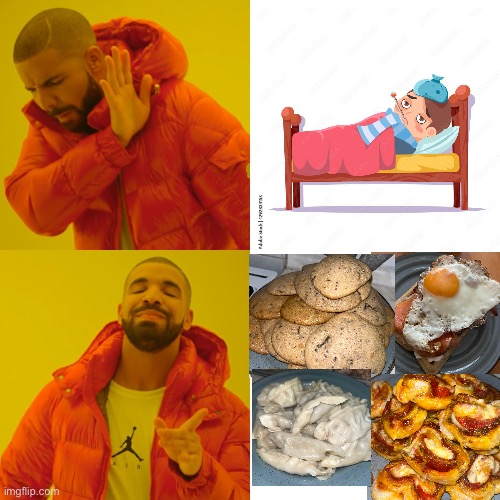
{kind=link}
28.březen
Nemoc pokračuje
Po probuzení mi znovu nebylo příliš dobře. Vzbudil jsem se strašně brzy a moc toho nenaspal, takže jsem si dopoledne ještě trochu zdřímnul. Po obědě jsem ale šel do práce, kde jsem se docela nachodil.
Po práci jsem nakoupil, uvařil si a ještě si dal večerní jógu, po které jsem se zase cítil o něco lépe. Je vlastně docela zajímavé, že se mi povedlo splnit všechny kroužky v kondici, i když jsem se moc nesnažil. :)
Přemýšlím ale nad tím, jestli si za to tak trochu nemůžu sám. Přece jen jsem své tělo dost zatěžoval a nedopřál mu tolik odpočinku. Dnes se mi kromě rýmy a krátkodobého tepla spojeného s bolestí hlavy objevila i bolest zad, což jsem naposledy zažil loni, když jsem se přepínal. Tak uvidím. Zítra si dám trochu klidnější den.
27.březen
Jóga vs. Nemoc
Moje plány padly hned po probuzení – bolelo mě v krku a necítil jsem se dobře. Chtěl jsem jít běhat, dát si jógu a pokračovat na soškách, ale běh se nakonec nekonal. Místo toho jsem si alespoň vyzvedl auto ze servisu, takže jsem se trochu provětral na čerstvém vzduchu.
Doma jsem si dal jógu na uvolnění, naobědval se a pak si šel lehnout. Pustil jsem si seriál, ale po něm už jsem vstal a pustil se do práce na soškách, u kterých jsem se krásně zrelaxoval při poslechu relaxační hudby. Nakonec jsem vymodeloval tři sošky – začal jsem pozicí Savasana známou jako mrtvola, na ni navázal pozicí Ustrasana neboli velbloud a svou flow zakončil pozicí Vrksasana, tedy strom.
Den jsem završil večerní jógou, při které jsem se krásně protáhl a procvičil kyčle.
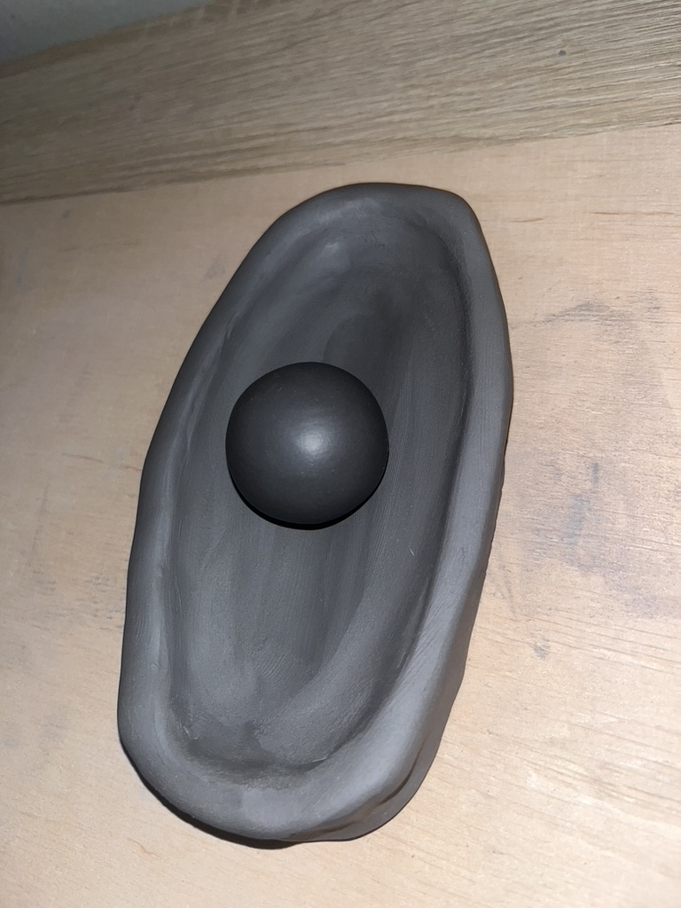
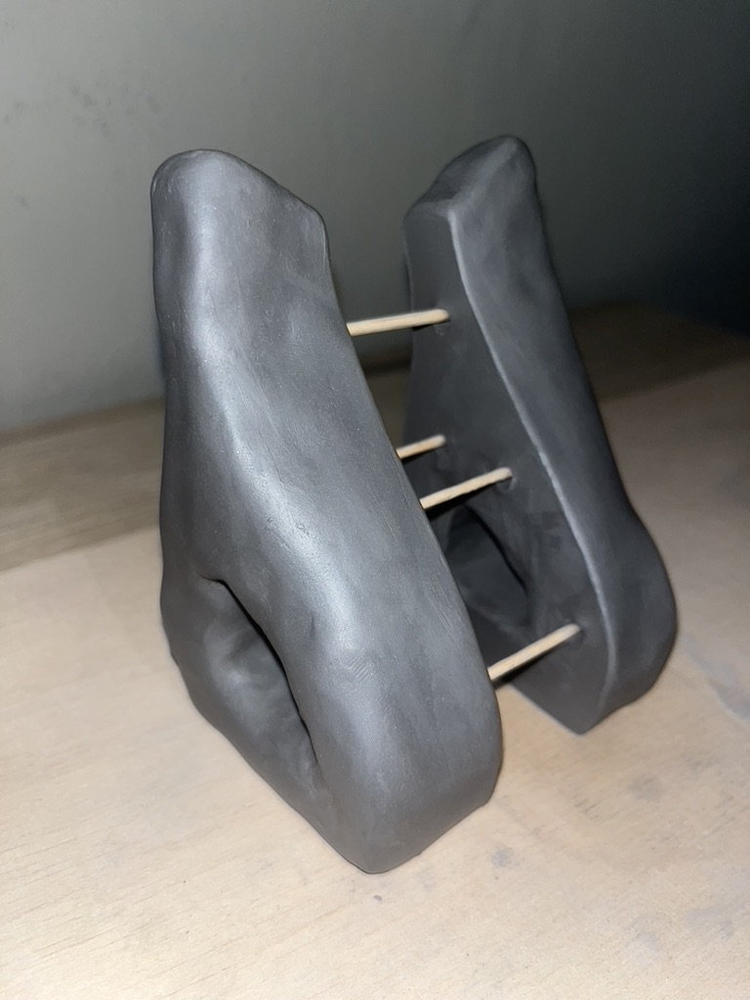
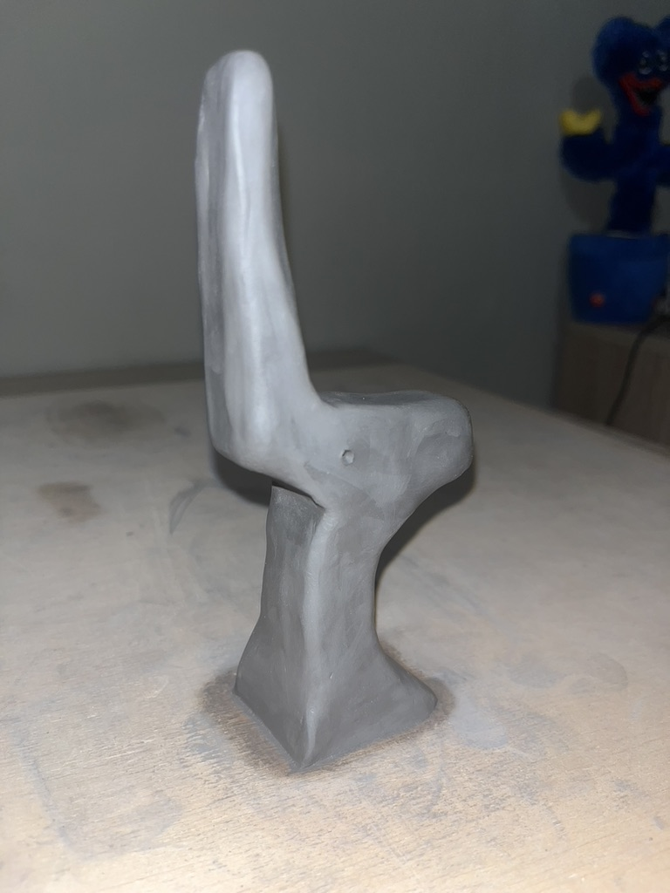
{kind=link}
{kind=link}
{kind=link}
26.březen
Jóga - ateliér - brunch - houbička - kolo - tyč - jóga
Je středa, což znamená další ateliérový den. Než jsem vyrazil do školy, stihl jsem si dát ranní jógu na protažení.
Ve škole jsme se znovu věnovali akčnímu umění, což bylo opět velice zajímavé. Pak jsme si dali brunch – lívance, které jsem si trochu netradičně zkombinoval s párkem a špenátem. Po jídle následoval workshop s Marií, která se zabývá hmyzem. Workshop byl velmi příjemný. Zkoušeli jsme automatický pohyb, čtení textů, automatické psaní, hledání hmyzu, pohyb v páru a nakonec modelování něčeho, co nás inspirovalo. Já si vymodeloval houbičku a hoolahop kruh, protože v ateliéru je to občas jako minové pole – člověk se musí vyhýbat věcem podobně jako v lese houbám. :)
Ze školy jsem se vydal na kole k Umakartu. Půjčil jsem si ho přes aplikaci Rekola, která nabízí 30 minut jízdy zdarma denně. Takže jsem se projel, ale zjistil jsem, že pohybovat se po Brně na kole není úplně snadné – některé malé uličky byly docela adrenalin.
Doma jsem se ještě protáhl s tyčí a otestoval první video, které jsem si přidal do nového playlistu. Bylo v angličtině, ale celkem srozumitelné. Jen jsem zjistil, že moje dřevěná tyč je možná až moc malá. Na závěr dne jsem si dal ještě jógu na protažení a posílení.
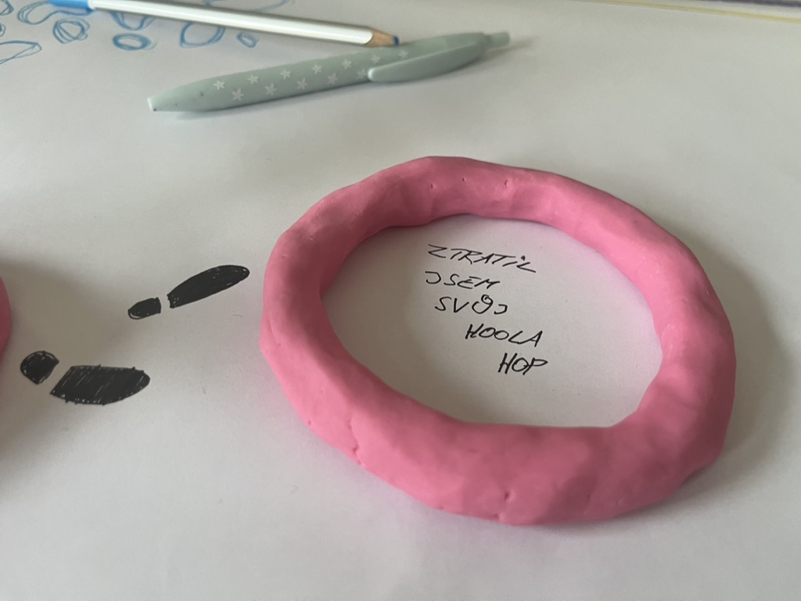
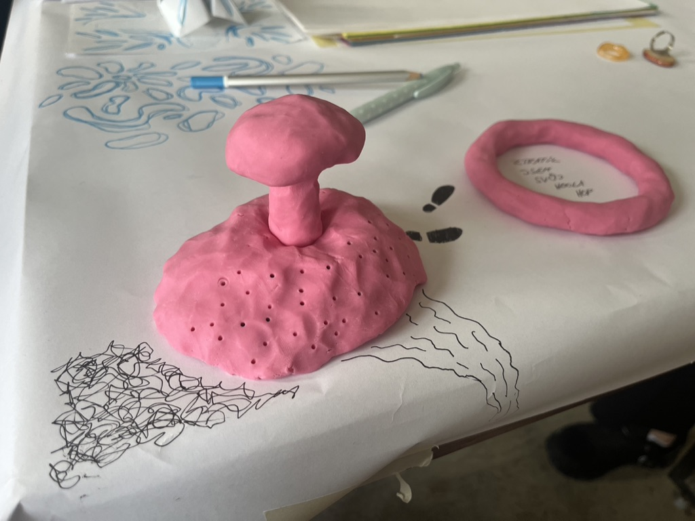
{kind=link}
{kind=link}
25.březen
Jóga - Běh - Mobilita
Ráno jsem měl vyřizování, ale jakmile jsem se vrátil domů, konečně jsem si mohl dát jógu. Proto jsem nelenil a pustil se do 40 minut jógy na protažení. Krásně mě to zahřálo, protáhlo celé tělo a připravilo na běh v nových botách.
Vyrazil jsem do kopce a prvních 3 kilometry jsem neustále jen stoupal. Bez zastavení jsem běžel a s velkou úlevou jsem uvítal chvíli, kdy jsem konečně mířil z kopce dolů. To mi pomohlo zkrátit tempo a zlepšit průměrný čas. Celou trasu 6,03 km jsem zvládl za krásných 33 minut. Dalo mi to zabrat, ale zatím se cítím skvěle – nohy mě nebolí a boty slouží dobře. Myslím, že skvěle tlumí dopad. Po běhu jsem se protáhl a chvilku si dal posilování na venkovních strojích.
Doma jsem vše završil cvičením mobility, při kterém jsem využil dřevěnou tyč. Baví mě to, takže jsem si začal zlehka hledat nová cvičení s tyčí. Povedlo se mi najít YouTube kanál Stick Mobility, kde ukazují další cviky s tyčí. Takže v brzkých dnech ode mě můžete očekávat nový playlist. :)
24.březen
Když práce, tak bakalářská
Pondělní den jsem strávil v práci na devítihodinové směně, takže jsem dnes neměl příležitost si pořádně zacvičit. Alespoň se teď mohu rozepsat o bakalářce, jak jsem již několikrát sliboval.
Momentálně pracuji na třech částech, které se věnují jednotlivým sportovním okruhům – jóga, běh a cvičení.
V oblasti jógy zpracovávám jógové asány, do kterých promítám své subjektivní pocity z daných pozic. V abstraktní formě pak přenáším svou vnímanou vizualizaci.
V běhu reflektuji dřinu a úsilí, které do běhání dávám. Zároveň se loučím se svými běžeckými botami, se kterými jsem naběhal spoustu kilometrů. Boty jsou ústředním prvkem tohoto díla – budou z nich viset hadičky, které symbolizují pot a krev. Ty budou kapat na zem a vytvářet mou nejběžnější běžeckou trasu, jako by po ní pot a krev skutečně proudily.
Poslední část se věnuje cvičení. Loučím se se svou karimatkou, na které při našem společném cvičení vznikne barevná malba. Nanesu barvu na různé části těla a postupným kontaktem s karimatkou vytvořím abstraktní obraz. Tento akt pomyslně stvrdí naše poslední propojení.
Tohle je prozatím vše k samotným dílům. Bakalářku budu pravděpodobně prezentovat přímo na závodě, který se koná 18. 6. Po doběhnutí 10 kilometrů si budu muset stoupnout před komisi, odprezentovat projekt i samotná díla a nakonec ještě odpovědět na dotazy. Bude to tedy taková pozávodní performance. Přemýšlím také o GPS trackingu mého pohybu po závodní trase, aby komise mohla sledovat, kdy doběhnu. :)
Ke konci roku chci tento projekt přihlásit do open callu zaměřeného na sport v umění.
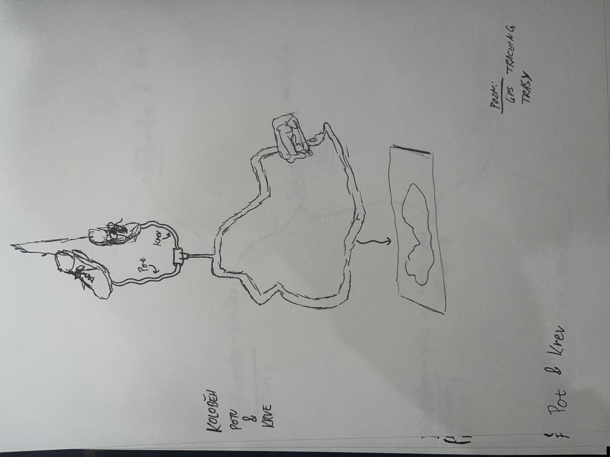
{kind=link}
23.březen
Neděle a dovětek Tao
Neděle je odpočinkový den, a po tolika dnech běhu a včerejším výletu bylo potřeba si trochu orazit a nabrat síly na nový týden. Po obědě jsme ale přece jen vyrazili na procházku a zastavili se v místní kavárně na chemex, tedy filtrovanou kávu.
Nakonec jsme stejně nachodili skoro 10 kilometrů, což se dá brát jako solidní denní standard.
Včera jsem zapomněl zmínit, že se mi podařilo dočíst knihu Tao úspěchu od Dereka Lina. Moc se mi líbila a přijde mi jako skvělý úvod do učení Taa. Autor v ní srozumitelně rozebírá jednotlivé příběhy a aplikuje principy Taa do běžného života. To mě nakonec přivedlo k rozhodnutí pořídit si Tao Te Ťing přímo od Lao-c’.
Jsem zvědavý, kam mě tahle kniha povede. Momentálně si připadám velmi… naplněný. Postupně se mi plní sny, vnímám změny jak na svém těle, tak v mysli. A to je dobrý pocit.
22.březen
Chudobný výlet
Budík na osmou – sprcha, snídaně a vyrážíme. Cílem bylo Nové Město na Moravě, kde v muzeu a na zámku probíhá část výstavy Chudoba. Expozice byla velmi zajímavá, propojovala historii se současností a otevírala důležitá aktuální témata.
Po výstavě jsme zamířili na oběd do Havlíčkova Brodu, kde jsme si dali steak. Poté jsme pokračovali na druhou část výstavy v muzeu a galerii. Tato sekce byla více historicky zaměřená a koncepčně se lišila od té první.
Po kulturním programu jsme si ještě dopřáli zákusky a vydali se do Lipnice nad Sázavou k Bretschneiderovu uchu a Ústům pravdy – obřím kamenným plastikám vytesaným ve skále. Udělali jsme si krátkou, necelé dva kilometry dlouhou procházku lesem. Jak se blížil večer, nasedli jsme do auta a vyrazili zpět do Brna.
Cestou jsme se ještě zastavili v Decathlonu, kde jsem si nechal udělat rychlou analýzu chodidel. Program mi doporučil konkrétní typ běžeckých bot, které jsem si rovnou vyzkoušel na běžícím pásu. Zdají se mi dobré, tak uvidím, jak se v nich poběží. Kromě bot jsem si pořídil ještě tyč na flexibilní protažení a tašku na jógamatku.
Dnes přikládám fotku ucha.
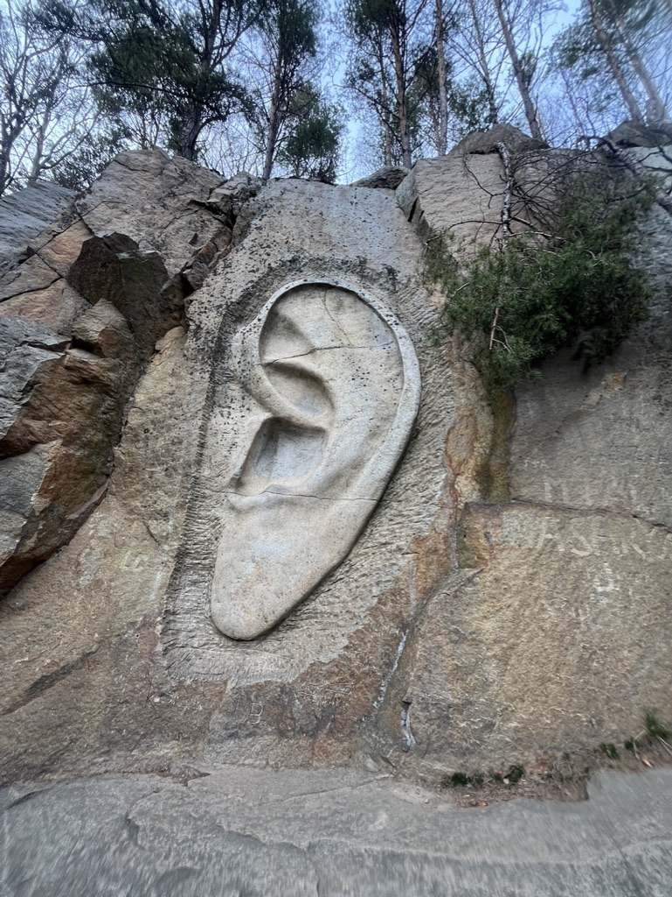
{kind=link}
21.březen
Popáté
Pátý den v řadě a opět jsem vyrazil na běh. Zase jsem se hecnul a zamířil do kopců. Běželo se mi celkem příjemně, a dokonce jsem si zaběhl nejlepší čas na 5 kilometrů. Už začínám cítit, že zvládnu i delší vzdálenosti, takže od dubna plánuju trasu postupně prodlužovat. Cílem je v květnu pokořit 10 kilometrů.
Doma jsem si ještě dal jógu a po běhu zamířil na stroje, kde jsem opět zvedl počet opakování.
Zítra si dám od cvičení volno, protože vyrážíme na galerijní výlet.
20.březen
Počtvrté
Už čtvrtý den po sobě jsem vyrazil běhat. Zdá se, že nové boty mi opravdu pomohly – nohy mi netuhnou a koleno nebolí. Jediný problém je odřená pata. Možná se o víkendu stavím do nějaké prodejny a zkusím si vybrat jiné boty.
Po běhu jsem si ještě šel zacvičit na stroje a každým dnem zvládám více opakování. Doma jsem to završil jógou, která měla být power, ale nakonec byla poměrně klidná.
19.březen
Konzultace a kopečky
Ráno jsem vstal dříve, než jsem plánoval, takže jsem vyrazil do ateliéru s předstihem. Dodělal jsem tam rozdělané věci – správu webů, skicování i zapisování myšlenek. Pak jsme se věnovali aktu ve fotografii, což bylo velmi zajímavé. Následovaly společné konzultace, po kterých mám dobrý pocit – cítím, že moje tvorba jde správným směrem.
Po ateliéru jsem jel domů a rychle vyrazil běhat, než zapadne slunce – už třetí den po sobě. Nalepil jsem si náplast na nohu a běh byl hned o dost lepší. Dal jsem si klasických 5 kilometrů, ale tentokrát jsem zamířil do větších kopečků, které jsem hravě zdolal.
Momentálně při běhu zkouším poslouchat playlisty s hudbou na 180 BPM, která by měla podpořit výkon. Bohužel mě tolik nebaví, takže se asi vrátím ke svému oblíbenému playlistu, kde mám i Midilidi. Dnes ho přidám k tomuto příspěvku – třeba se zalíbí i vám. Ještě ho trochu upravím a možná opráším i starší playlist.
18.březen
95 minut šlap
Po škole jsem si znovu šel zaběhat, ale nové boty mi sedřely kotník. V průběhu běhu se mi strhla náplast, a tak jsem poslední dva kilometry běžel s nepříjemnou bolestí. Vidím to tak, že boty co nejdříve reklamují a pořídím si lepší.
Večer jsme vyrazili do divadla na představení Jednou nám za to děcka poděkujou. Hlavní představitel po celou dobu představení šlape na kole, což má můj velký obdiv – udržet tempo, hrát a mluvit celých 95 minut je slušný výkon! Představení začalo jako komedie, ale postupně se proměnilo v mnohem vážnější podívanou. Klimatické změny, láska, cyklistika, práce i vandalismus – to všechno jsou ústřední témata hry.
Už od začátku jsem byl napjatý, protože představení bylo velmi kontaktní a živé. Celkově skvělý a inspirativní zážitek!
17.březen
Dal jsem tomu zabrat
Je večer a uvědomuji si, že jsem dnes opravdu nešetřil energií. Ráno jsem začal jógou, a přestože počasí nebylo ideální, vyrazil jsem hned poté na běh. Konečně jsem si obul nové boty a byl zvědavý, jak se mi v nich poběží. Během běhu dost foukalo, což mě trochu zpomalovalo, ale jinak to byla skvělá trasa. Průměrnou kadenci si držím na 181 krocích za minutu, což mě potěšilo.
Po běhu jsem si ještě trochu zaposiloval na venkovním workout hřišti a doma přidal 10 minut cvičení na břicho.
Zbytek dne jsem věnoval práci na soškách. Dnes jsem ztvárnil dvě pozice – most a horu. Pozici mostu jsem vybral, protože se mi ji konečně začíná dařit lépe zvládat a intenzivně na ní pracuji.
Druhá soška zachycuje pozici hory. Při její tvorbě jsem se dostal do stavu hlubokého soustředění, skoro až meditace, kdy jsem sošku modeloval zcela intuitivně. Čas mi utekl tak rychle, že když jsem skončil, bylo už pozdě večer.
Pro ukázku nahrávám sošku hory.
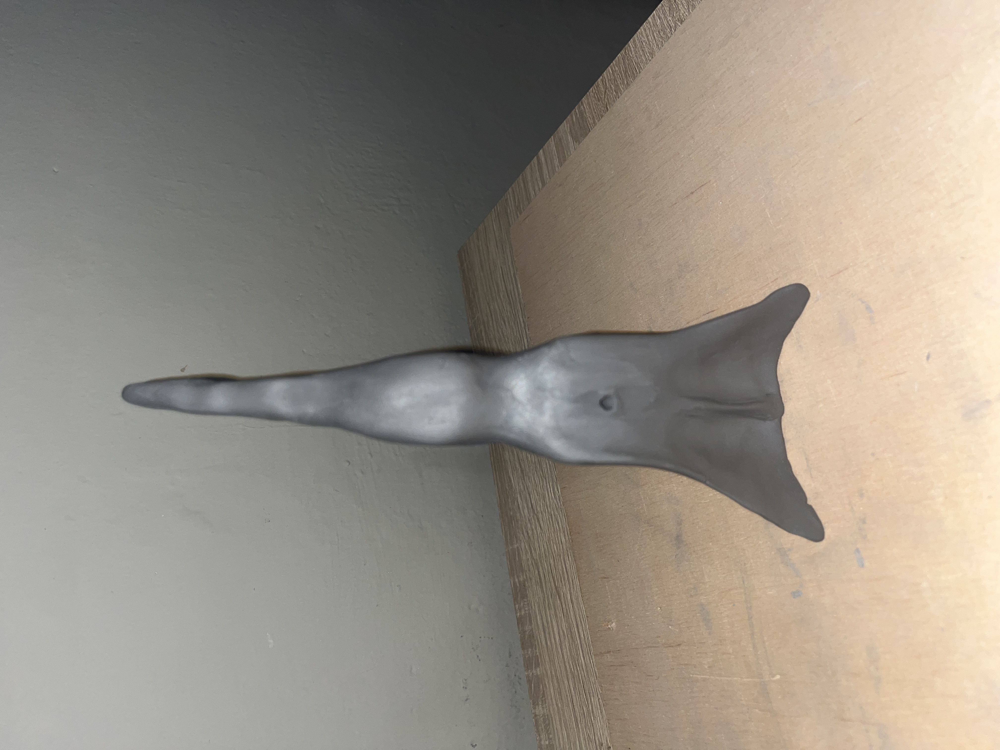
{kind=link}
16.březen
O sošce
Ráno se mi těžko vstávalo, ale vyrazili jsme na snídani a do práce. Po práci jsem si tentokrát nedal ani jógu, protože jsem se cítil trochu přešle. Místo toho jsem si alespoň přečetl kapitolu z Tao úspěchu.
Teď je ale čas podělit se o svou tvorbu. Pomalinku, ale jistě pracuji na soškách, a dnes nahraji fotku sošky Bojovníka 3. Vybral jsem si pozici, která je náročná nejen pro mé tělo, ale i pro hmotnou tvorbu z hlíny. Když jsem ji cvičil, cítil jsem tíhu v kloubech a kyčlích, ale postupně se mi daří tuto zátěž zvládat a pozice už není tak obtížná.
Práce s hlínou byla zajímavá – beru si větší kus a postupně z něj tvaruji figurku, přičemž ubírám hmotu. V tomto procesu je pro mě důležité pracovat s materiálem jako takovým a zkoumat jeho tělesnost. Ze sošky mám velkou radost, protože mi pomohla si hodně věcí uvědomit.
Den po jejím vytvoření mě při pohledu na ni napadlo, že bych se měl víc odpoutat od figurálnosti. Chtěl bych ji zabstraktnit a zaznamenat spíše pocit a vnímání pozice než její přesný tvar.
Zítra se na to vrhnu a pořádně si pohraju s hlínou. A teď už slibovaná soška. Ahoj!
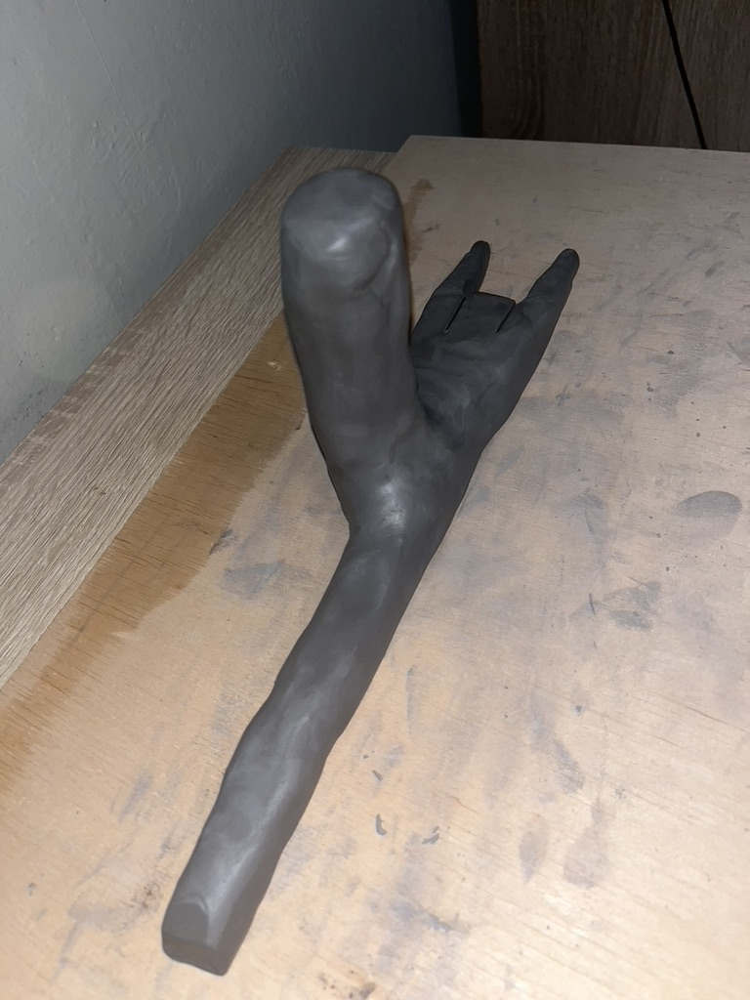
{kind=link}
15.březen
Výlet
Dnes se konal první táborový výlet. Bohužel nám nepřálo počasí – byla zima a trochu pršelo. Na druhou stranu mám alespoň nachozených 11 kilometrů za dnešní den. Teď už jsem ale pořádně unavený.
I tak jsem si ještě stihl dát 15 minut jógy a 5 minut cvičení na horní část těla.
14.březen
Myšlenky u jógy
Ráno jsem si dal jógu, která byla taky náročná, ale vzato velmi inspirativní. Během cvičení mě napadlo spousta skvělých myšlenek, které si potřebuji zaznamenat.
13.březen
Další den
Po třech předchozích bězích mě dnes začaly dost bolet nohy – hlavně koleno a lýtko. Uvažuji o tom, že si nechám přeměřit nohy a jejich pohyb a investuji do kvalitnějších běžeckých bot. Nechci si nohy zbytečně ničit, zvlášť když mám v plánu se v běhu dál posouvat.
Po práci jsem si dopřál příjemnou, i když trochu náročnější jógu. Teď už mám skoro vše hotovo, a tak mířím do sprchy a rovnou do postele – únava už na mě dost doléhá.
12.březen
Jak na sport?
Stále mi to nedalo a rozhodl jsem se dál vzdělávat v oblasti sportu. Dnes jsem si proto na YouTube pustil sérii Zvedni se! od České televize. Inspirovalo mě to natolik, že jsem sestavil nový playlist s názvem Jak na sport?
Najdete v něm videa zaměřená na běh, chůzi, plavání, cyklistiku a tanec. Jsou určená jak pro začátečníky, tak i pro pokročilé sportovce, kteří si chtějí prohloubit znalosti. Osobně jsem už zhlédl celou sérii o běhu a chůzi a musím říct, že je velmi užitečná.
Nebojte se na videa podívat! Do playlistu budu průběžně přidávat další zajímavé materiály, například od Českého olympijského týmu. Playlist naleznete v sekci O projektu.
11.březen
Nejdelší jóga a edukace pro lepší běh
Dnes se mi podařilo vstát dříve, než jsem plánoval, a tak jsem začal den hodinovou ranní jógovou flow zaměřenou na protažení a posílení. Toto cvičení rozhodně není pro začátečníky – a i když už se mezi ně nepočítám, musím uznat, že mi dalo pořádně zabrat. Bylo svižné, silové a plné balančních prvků. Ale nebojte se, dnes k příspěvku přiložím video. Po dokončení mě hřálo celé tělo spokojeností, protože vidím na sobě pokroky. Dokonce už se mi daří udržet pozici vrány celých deset vteřin! 😊
Po včerejším běhu jsem se rozhodl trochu se dovzdělat o běžecké technice. Studoval jsem, jaký je nejlepší došlap při běhu. Nikde však není jednoznačná odpověď, protože každý styl má své výhody a nevýhody. Navíc u delších tratí člověk stejně nevydrží striktně držet jeden způsob došlapu. Z toho, co jsem zatím zjistil, se zdá, že nejefektivnější je došlap na střed nohy – pomáhá rovnoměrně rozložit váhu a tlumit nárazy.
Zároveň jsem se podíval i na kadenci, což je frekvence kroků. Čím vyšší kadence, tím rychlejší a efektivnější běh. Dnes jsem se proto snažil zkrátit krok a upravit došlap. Podle hodinek se momentálně pohybuji kolem 180 kroků za minutu, což je hodnota, které dosahují i profesionálové. To mě mile překvapilo!
Dále jsem se snažil porozumět správnému dýchání při běhu, ale to je trochu složitější téma. Budu si to muset ještě lépe nastudovat a hlavně vyzkoušet v praxi. Dýchání je totiž moje největší slabina při sportu obecně – ať už při běhu, józe nebo plavání. Nikdy jsem se ho pořádně nenaučil, takže s tím musím něco udělat.
Na závěr dne jsem ještě pracoval na sošce Dighasana 3, tedy rovnovážném bojovníkovi, známém také jako „holubička“. Teď ji nechám přes noc odpočinout a zítra se rozhodnu, jak pokračovat dál.
10.březen
Náročný běh
Jak jsem slíbil, tak jsem udělal. Ráno jsem si dal půlhodinku power jógy, po které následoval běh. Vyrazil jsem na svou obvyklou pětikilometrovou trasu. První čtyři kilometry jsem běžel bez zastavení, dokonce ani na semaforech jsem se nezdržel. Po čtvrtém kilometru na mě ale padla únava – z ničeho nic mě začala bolet žebra a zpomaloval jsem. Do toho se přidala bolest v koleni, takže jsem se musel na chvíli zastavit. Nakonec jsem těch pět kilometrů zdolal s tempem 5’33’’, což se mi konečně podařilo zase o něco snížit. Myslím si však, že jsem dnes při běhu špatně dýchal, a navíc někdo na zahradě pálil odpadky, takže jsem se nadýchal kouře.
Po běhu jsem si na hřišti chvíli odpočinul a pak se vrhl na posilovací stroje, abych zapracoval na rukou i břiše. No a pak už jsem vyrazil pro hlínu – zítra mě čeká sochaření.
9.březen
Nevydařená snídaně
Čtvrtý a poslední den práce. Znovu jsme vyrazili na snídani, ale dnes jsem udělal chybu – objednal jsem si omeletky s párkem. Problém? Nemám rád vejce. Celá situace vznikla z toho, že jsem si popletl omeletu s lívanci. 😀
Zítra už musím vyrazit běhat, abych si odčinil pár dní bez cvičení. Venku je posledních pár dní hezky, takže ideální počasí na běh. A ještě mě čeká nákup hlíny na mé keramické sošky.
8.březen
Performance
Třetí den v práci. Ráno jsem odstartoval vydatnou snídaní v kavárně, kde jsem si dal bavorský hotdog. A opět jsem se nachodil do a ze schodů.
Po práci jsme pro změnu vyrazili na performance Fugk, inspirovanou finsko-japonskými tradicemi. Začátek probíhal venku před divadlem, kde medvěd lyžoval po náměstí. Následně jsme se přesunuli do sklepního prostoru, kde už na nás nezbyly židle, takže jsme seděli přímo před reprákem. Očividně jsem asi zavazel, protože se mi performer v průběhu snažil vytrhnout hlavu. 🙂
Z performance jsem odcházel nadšený a překvapený celkovou atmosférou události.
7.březen
Práce čtyř chodů
Pracovní jízda pokračuje. Bohužel v práci to není nijak sportovně záživné, ale aspoň tu máme spoustu schodů, takže mi hodinky započítávají cvičení. 🙂
Po práci jsme vyrazili na vynikající večeři složenou ze sedmi chodů, která rozhodně stála za to. Domů jsme dorazili až kolem desáté večer.
6.březen
Ztrácení bolesti
Dnešní pracovní den mě poznamenal, a tak jsem si večer dopřál bilanční jógu, abych znovu rozproudil své tělo i myšlenky. Ve svých kyčlích se cítím skvěle – tlak už není tak intenzivní jako dřív a dokážu udržet pozice delší dobu s lépe prolnutými končetinami. Moje tělo je šťastnější, a já také.
5.březen
Soškování
Ateliérový den začal volnou tvorbou sošek inspirovaných Venušemi. Už několik dní jsem doma bojoval s tvorbou sošek pro svůj projekt a nevěděl jsem přesně proč. Nakonec jsem zjistil, že problém byl nejspíš ve staré hlíně. V keramickém studiu jsem ale pracoval s naprosto perfektní černou hlínou, která byla skvěle tvarovatelná. Díky tomu se mi podařilo vytvořit postavy přesně podle mých představ.
Do tvorby Venuše se promítla i moje potřeba ztvárnit figurky v jógových pozicích – ásanách. První figurka byla inspirována pozicí Dandasana (hůl) a druhá sedem na patách, tedy Vadžrásanou, kterou jsem doplnil o svůj oblíbený prvek – pozdrav Namaste, kterým zakončuji každé cvičení jógy.
Mám z těchto sošek obrovskou radost a těším se, kam mě tahle cesta zavede.
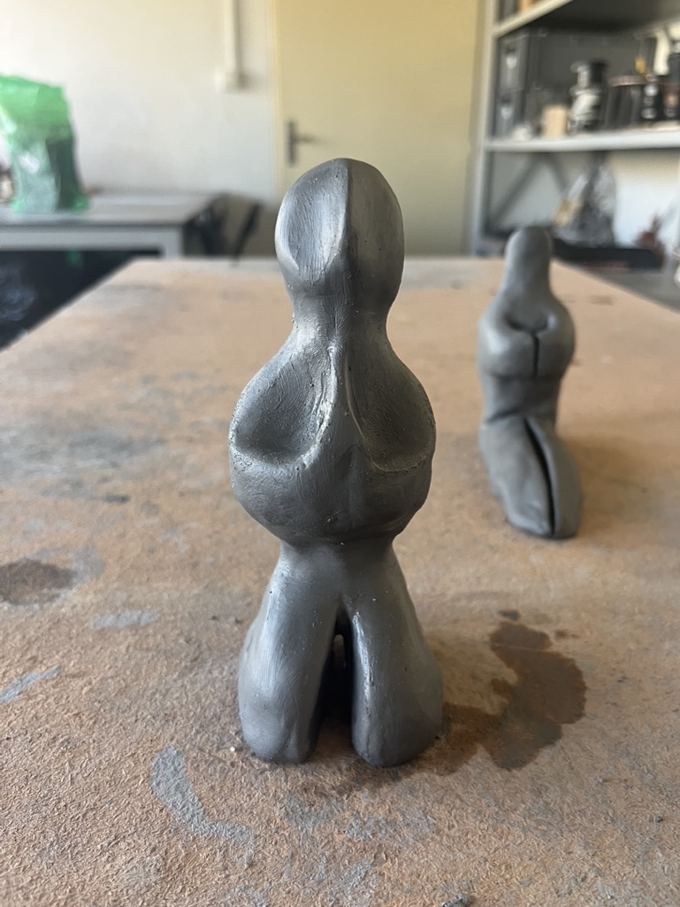
{kind=link}
4.březen
Pád
Jak jsem slíbil, po kávě jsem vyrazil ven. Dal jsem si svou obvyklou pětikilometrovou trasu a dnes se mi běželo opravdu skvěle. Doma jsem si dal jógu na protažení a pak jsem ještě trénoval pozici vrány. Začíná se mi dařit – už jsem v ní zvládl vydržet celých 10 vteřin! Ale po několika opakováních jsem nakonec spadl na hlavu. :)
3.březen
Zvláštní den
Ráno nezačalo nejlépe – po nočních můrách jsem se probudil s nepříjemným pocitem, který se se mnou táhl po celý den. Necítil jsem dnes moc motivaci ke cvičení a ani žádné zvláštní naplnění. Venku bylo sice hezky, ale běhat jsem nešel a domácí cvičení mi přišlo nijaké. Beru to ale jako součást procesu – zítra už bych rád vyběhl.
Odpoledne jsem pracoval na plakátu na dětský den a večer mě čekala táborová schůze. Teď ještě dokončuji návrhy na odznáčky.
2.březen
Výstavní den
Další neděle ve znamení odpočinku. Tentokrát jsme vyrazili do města za památkami a výstavami. Naši cestu jsme začali v Památníku Leoše Janáčka, což je malá vila přistavěná ke škole, kde učil. Poté jsme pokračovali do Moravské galerie, kde jsem si znovu prošel výstavu Made by Fire a navštívil i novou Plecháčovu výstavu. Také jsem si vyzkoušel virtuální realitu, která reflektovala situaci na Ukrajině.
Poslední zastávkou byl Dům umění, kde dnes končily dvě výstavy – Marius Kotrba a Timo. Kotrba mě zaujal především svými soškami zobrazujícími cvičení, které mě vážně zaujaly. Přikládám jejich fotku.
Den jsme zakončili loučením s kolegy z práce.
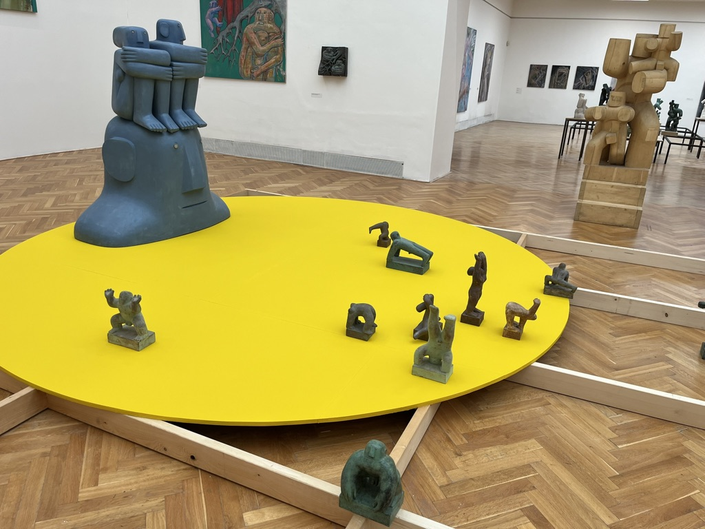
{kind=link}
1.březen
Běh a procházka
Dnes jsem absolvoval druhý letošní běh na 5 km za 34 minut – pohodové tempo. Počasí ale moc nepřálo, bylo chladno a foukalo, takže to nebylo úplně nejpříjemnější.
Na běh jsem tentokrát použil cvičení přímo z hodinek, takže jsem měl zaznamenány všechny potřebné informace, a dokonce detailnější než z aplikace Nike Run Club. Proto jsem ji nakonec odinstaloval. A zároveň jsem dnes obdržel ocenění z kondice.
Po obědě jsme vyrazili na procházku na kávu a dezert. Celkem mám za dnešek skoro 15 000 kroků, takže pohybově velmi povedený den! 🏃♂️☕🍰
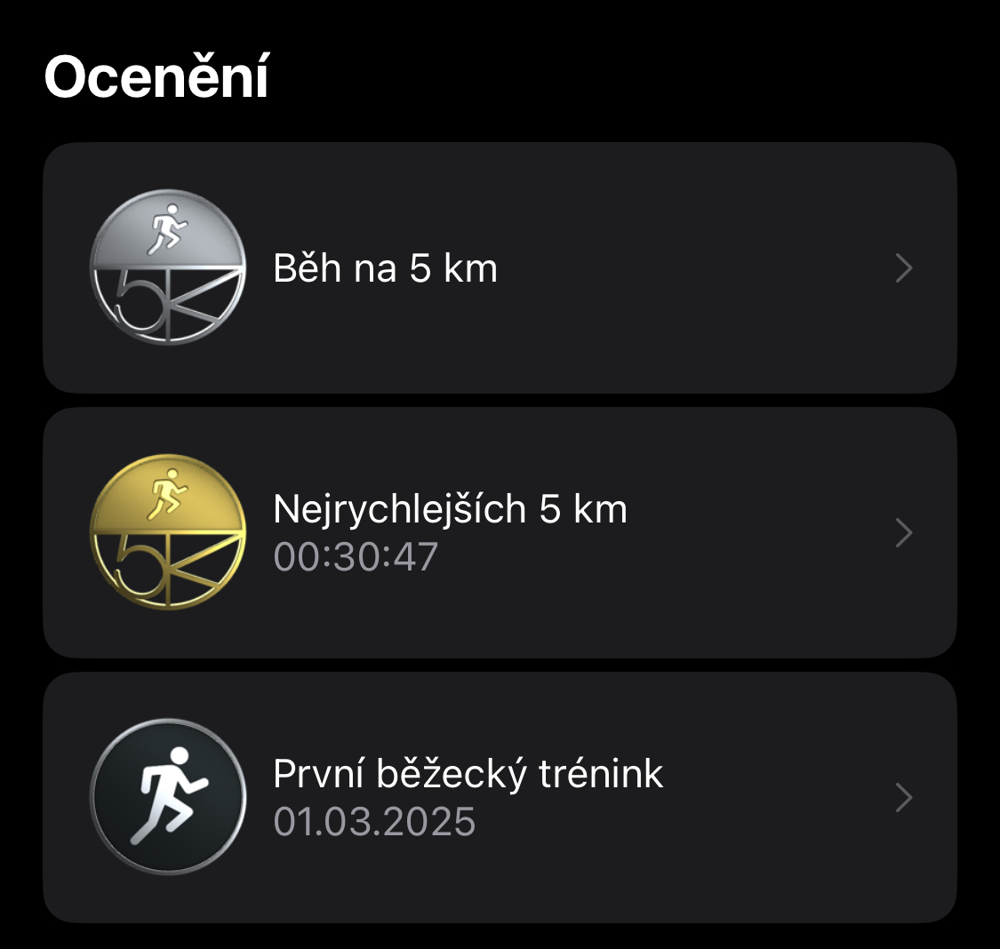
{kind=link}
Únor
28.únor
Taneční den
Poslední den tohoto zkráceného měsíce. Dnes mě čekalo poslední video z jógy, protože desáté video nemám uložené a na internetu ho bohužel nemohu dohledat.
Pokračoval jsem hip-hop dance kardiem, které bylo skvělé a zábavné. Určitě přidám video k dnešnímu příspěvku! A když už jsem byl v tanečním rytmu, pustil jsem si ještě několik tanců z videohry Just Dance.
Celý den byl tedy intenzivní a plný tance! 🎶💃
27.únor
Rozproudit krev
Asi už ani nemá smysl zmiňovat, že jsem dnes cvičil jógu.
Tak rovnou přejdu k hlavnímu bodu – lekci FIRE Form. Jedná se o další kardio video, které skvěle rozhýbalo celé tělo a dalo mi pořádně zabrat. Cviky byly velmi intenzivní, a i když jsem cvičil doma, sotva jsem stíhal tempo.
Po tréninku jsem se ale cítil dobře, a tak jsem si nasadil laťku ještě výš – přidal jsem tři pětiminutová workout videa zaměřená na celé tělo. To už mě definitivně odrovnalo, takže jsem si pak v klidu mohl dopřát ledovou sprchu. :)
26.únor
Ateliér a stoj na hlavě
Dnešní ateliérový den se nesl ve znamení diskuzí o Venuších a dalších pravěkých nálezech, jejich symbolice a významu. Poté následovaly konzultace, během nichž jsem mluvil o svém projektu. V následujících dnech se pustím do práce s hlínou a začnu vytvářet první díla pro svůj projekt. Příští týden si budeme vyrábět vlastní Venuše, takže jsem zvědavý, jak mi práce s hlínou půjde – už dlouho jsem s ní nepracoval.
Domů jsem dorazil poměrně pozdě, ale i tak jsem si dal jógu zaměřenou na stoj na hlavě. Ten mi zatím nejde a necítím se úplně jistě, ale věřím, že jednoho dne se mi ho podaří zvládnout.
25.únor
Cvičení a zataženo
Je poslední týden února a výzvu od FitFabu už mám úspěšně za sebou. Dnes jsem dokončil poslední video – BOOTY Light zaměřené na stehna a zadek. Předtím jsem si dal ještě jógu a následně pokračoval kardiem.
Dnešní zatažené počasí mě nějak uspalo, takže i můj text bude tentokrát kratší. Jdu se věnovat skicování.
24.únor
Školení a kroužky
Dnes mám plné kroužky, i přestože jsem si vůbec nezacvičil. Ráno jsem ale vyšlápl kopec na hrad a už to mi přidalo minuty do cvičení – a sejití kopce taky něco přidalo. Mám radost, že hodinky fungují i ve dnech bez jógy a klasického cvičení.
Celý den jsem strávil na školení, a poté jsme s kolegy měli posezení. Ve finále to tedy byl takový pracovně-odpočinkový den.
23.únor
Zas líná neděle
Jak už to s nedělí bývá, i dnes byl spíše odpočinkový den. Brácha k nám přišel na oběd a zůstal až do večera, takže jsem během dne neměl čas na cvičení. Přesto jsem si večer dal plánovanou jógu, takže aspoň trochu pohybu bylo.
Dnešní lekce byla zaměřená na kyčle. Už začínám cítit úlevu – při pozici půlměsíce už nemám takový problém. Vydržím v ní déle a necítím takový tlak v kyčli. Nejsem si jistý, jestli za to mohou vitamíny, lepší mobilita, nebo silnější svaly v noze.
Každopádně dnešek vnímám jako velmi pozitivní.
22.únor
Práce, mentální práce a bakalářská práce
Po dlouhé době jsem byl v práci, takže jsem si až večer doma zacvičil jógu. A konečně se mi podařilo dostat do pozice velblouda!
Už jsem na straně 84 knihy Etika a sport. Musím říct, že je hodně filozoficky zaměřená – upřímně jsem čekal něco trochu jiného, ale určitě ji dočtu a pokusím se z ní vytěžit užitečné materiály.
Znovu jsem se pustil do knihy Tao úspěchu. Před pěti lety mě provázela na mé „hubnoucí“ cestě a dokonce jsem jeden z jejích příběhů později zpracoval do svého projektu. Vždycky jsem ji ale přestal číst v polovině. Tentokrát se k ní vracím s tím, že ji budu číst postupně, po kapitolách. Dnes jsem se věnoval části Pravá vyrovnanost, kterou jsem kdysi zpracoval do projektu.
Dnes jsem si také dělal myšlenkové mapy k bakalářce. Postupně si urovnávám myšlenky k tvorbě a brzy je začnu realizovat. Připadá mi, že už mám k projektu spoustu materiálů, takže věřím, že se mi bude dařit. Myšlenkové mapy určitě později nasdílím.
Jako bonus dnes přikládám zmiňovaný projekt.
21.únor
Rozbito
Už od rána se cítím trochu rozbitý ze včerejšího běhu, takže jsem dopoledne spíše odpočíval a uklízel. Po obědě na mě ale přišla chuť na cvičení, a tak jsem si dal novou lekci jógy ze série Yoga Orbit Challenge. Byla opravdu příjemná, takže jsem rovnou navázal dalším tréninkem.
Vzhledem k tomu, že příští týden nebudu mít tolik prostoru pro cvičení doma a rád bych si šel několikrát zaběhat, rozhodl jsem se trochu podvádět – a pustil jsem si videa z příštího týdne už dnes. Konkrétně Pure HELL a Burn IT. Teď jsem ještě víc dolámaný, ale naštěstí mám zítra prostor pro odpočinek, protože budu celý den v práci.
Dnes přikládám celý playlist jógy z Orbit Challenge, který jsem musel nahrát na svůj YouTube, protože už není oficiálně dohledatelný. Playlist je nastaven jako neveřejný, takže se k němu dostanete pouze prostřednictvím tohoto odkazu.
20.únor
Dojógováno, zaběhnuto a naplánováno
Je to za mnou! Jóga challenge úspěšně splněna.
Po józe jsem se vydal na svůj první letošní venkovní běh. Venku bylo 8 stupňů, takže jsem si oblékl své jógové legíny, kraťasy, tričko, mikinu a bundu a vyrazil, abych se zahřál. Chyběl mi akorát šátek, který jsem půjčil Ollimu na jeho sportovní víkend.
Dnešní cíl byl jasný – zaběhnout 5 km po zimní pauze. A povedlo se! Krásně za 30 minut, takže jsem velmi spokojený a už se těším na nadcházející závody. Jen mě v posledním kilometru začala trochu mravenčit noha.
Běh jsem zaznamenával pomocí aplikace Nike Run Club na hodinkách, ale bohužel mi za celou dobu neukázala žádné aktivní kilokalorie. To mě trochu zklamalo, a tak jsem se rozhodl vrátit zpět k původní aplikaci v hodinkách.
Zítra mám volný den, který chci věnovat práci na bakalářce a skicování. Určitě si najdu čas i na další jógu, cvičení a budu pokračovat v četbě Etika a sport.
Jako bonus dnes přikládám písničku, kterou jsem objevil včera a hned jsem si ji musel vložit do svého running playlistu.
19.únor
Ateliérový den
První ateliérový den mého posledního bakalářského semestru začal informační schůzí o tom, co nás v tomto semestru čeká. Program je velmi nabitý, a tak vím, že se nebudu moci věnovat na 100 % všemu, protože nejvíce pozornosti chci věnovat bakalářce. Dále se nám představili stážisté, což bylo velmi inspirující. Nachystali jsme ateliér a poté jsem jel domů.
Doma jsem si řádně zacvičil. Jako každý den jsem pokračoval jógou – dnes dnem 27. Zítra si pravděpodobně dám 28. a 29. den, jelikož obě videa jsou poměrně krátká, a 30. den je spíše rozlučkový. Poté už sem budu přispívat jinými videi, podle kterých budu cvičit dál.
Abych to završil pořádně, odcvičil jsem ještě CARDIO Workout, které ze mě – jako obvykle – vysálo veškerou energii.
Večer jsem pokračoval ve čtení knihy Etika a sport. Ke knize se určitě vyjádřím později, ale dnes alespoň přihodím části textu, které jsem si musel zapsat.
„Daleko lepší je sportovat pro prožitky pro evidentní prožitky, které jsou vždy nepochybným a hlubokým stvrzením vlastní existence v určitém čase, prostoru a osmyslnění.“
„V tomto prožitku člověk patří sám sobě a danou chvíli prožívá celou bytostí…“
„Nejde zde jen o zdraví, jde o celý smysl existence a tedy i života jako celku.“
18.únor
Začátek nového semestru
Den začal bakalářským seminářem, kde nám bylo řečeno, jak máme vypracovat písemnou část práce. Tímto můj školní den skončil.
Po škole jsem si šel rovnou zaplavat do bazénu. Dneska jsem ale odcházel trochu zklamaný, protože vířivka byla v pronájmu, takže jsem si nemohl odpočinout po plavání. Uplaval jsem 750 metrů s tempem 4 minuty a 40 sekund na 100 metrů.
Po plavání jsem měl spoustu obchůzek – jel jsem koupit poukaz, novou kávu, nakoupit domů a také babičce opravit tablet. Dnes jsem se tak naobědval až po druhé hodině.
Poté jsem si dal jógu – den 25 a 26, takže se už blížím ke konci výzvy a brzy budu cvičit podle nálady. Následovalo video Power Mobility, které jsem si neskutečně užil, i přesto, že jsem neměl potřebnou tyč. Jako náhradu jsem využil starou valašku. Cviky byly úžasné a po celou dobu jsem zíral, jak jsou předcvičující mobilní a kam všude jsou schopni dát ruce a nohy. Pořádně jsem se nadřel, ale těším se, až si tuto lekci zopakuji. Tímto jsem dokončil všechna videa z této týdenní challenge.
Jako bonus dnes přikládám fotku sochy, kterou jsem viděl v DOXu na výstavě Stefana Milkova. Myslím si, že tahle socha skvěle znázorňuje, jak se dnes cítím.
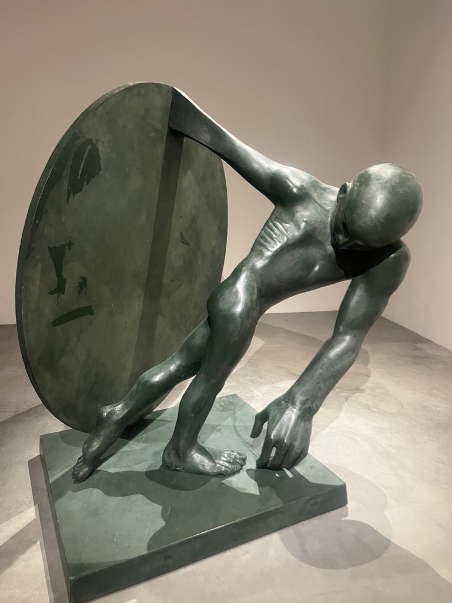
{kind=link}
17.únor
Don’t die / Do live
Včera jsem se podíval na film Don’t Die o Bryanu Johnsonovi, který se snaží snížit svůj biologický věk. Film na mě udělal velký dojem a bylo fascinující sledovat jeho cestu. Zaujaly mě jeho denní návyky – přesně naplánovaná strava, pravidelné užívání vitaminových doplňků podle výsledků jeho testů, každodenní hodinové cvičení a přísné vyhýbání se vyššímu UV indexu. Založil projekt Blueprint, jehož cílem je optimalizace lidského zdraví a dlouhověkosti. Nejzajímavější je, že kolem něj vznikla komunita Don’t Die, která se pravidelně schází, pořádá procházky a různé sportovní aktivity. Jsem zvědavý, kam jeho cesta povede a zda jeho experimenty přispějí k pokroku ve zkoumání stárnutí.
Včera mi také dorazila nová korková jógamatka, takže jsem ji dnes musel hned otestovat. Materiál je velmi příjemný na ruce i nohy, nelepí se na tělo a neroztahuje se. Díky tomu jsem mohl s naprostým komfortem provádět pozice jako bojovník nebo pes hlavou dolů.
Po józe jsem chtěl vyzkoušet Acro jógu, ale pak jsem zjistil, že jde o typ jógy pro dva, takže tentokrát vynechávám. Místo toho jsem pokračoval novým videem UPPER Form, zaměřeným na posilování. Bohužel jsem zjistil, že na tuto lekci potřebuji těžší činky, takže jsem si ji tolik neužil. Naštěstí to zachránilo taneční video MOVE Strongest, které mi pořádně zvedlo tep a dalo mi zabrat. Takže s klidným srdcem můžu říct, že dnešní trénink stál za to!
16.únor
Symbolické oslavení
Dnes je to přesně čtyři roky od mého prvního běhu. Původně jsem si říkal, že bych si symbolicky šel zaběhat, ale nakonec jsem byl rád, že jsem si to rozmyslel – po obědě jsme vyrazili na procházku a silná ledovka mi dala jasně najevo, že by to nebyl nejlepší nápad. Čas od času jsem na ledu uklouzl, takže běhání by dnes bylo spíš o přežití než o oslavě.
Do odevzdání mé bakalářské práce mi zbývají tři měsíce a čeká mě spousta práce. Jsem na sebe hrdý za všechno, co jsem doposud zvládl, i když to nebyla přímá práce na projektu. Podařilo se mi vytvořit dílo na výstavu, další na klauzuru, psát blog, zlehka pracovat na bakalářce a zároveň připravovat projekt na magisterské přijímačky, který budu realizovat v dalším studiu. A k tomu ještě připočítám přípravu textů na státnice.
Po tom všem jsem si dopřál menší mentální odpočinek, který nyní ukončím a budu se naplno věnovat práci na bakalářce – jejíž součástí je i tento blog. Dnešním příspěvkem symbolicky oslavují svůj první běh a zároveň úspěšný půlrok, ve kterém hodlám s plným nasazením pokračovat.
PS: Dneska přidávám i záznam ze svého prvního běhu.
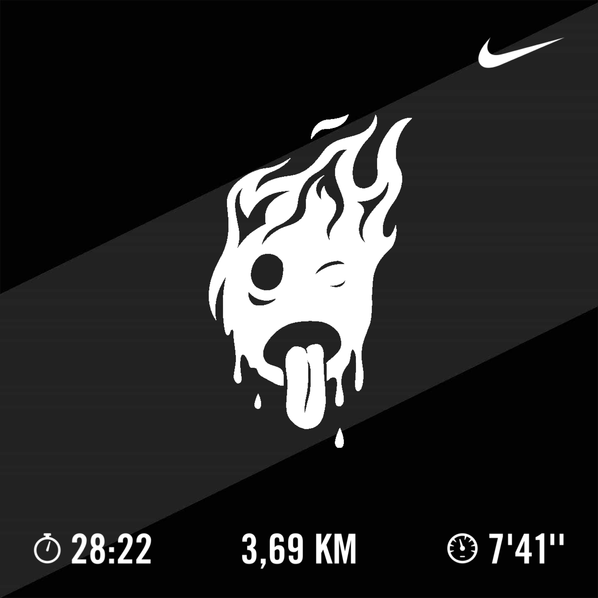
{kind=link}
15.únor
Klidnější cvičení
Stále pokračuji ve výzvě od FitFabu. Dnes jsem si znovu dal dvojici videí zaměřených na paže a zadek a také .Well BACK.. Nebylo to však úplně to, co bych momentálně potřeboval. Proto to zatím vidím tak, že dokončím únorovou výzvu a poté si budu vybírat cvičení podle svých aktuálních potřeb.
14.únor
Svatý Valentýn
Valentýnský den byl oceněn valentýnským odznáčkem za cvičení. Po práci jsem si doma zacvičil jógu a při tom otestoval nové legíny na cvičení, které mi některé pozice jistě usnadnily – už si totiž tolik nedřu kůži na nohou.
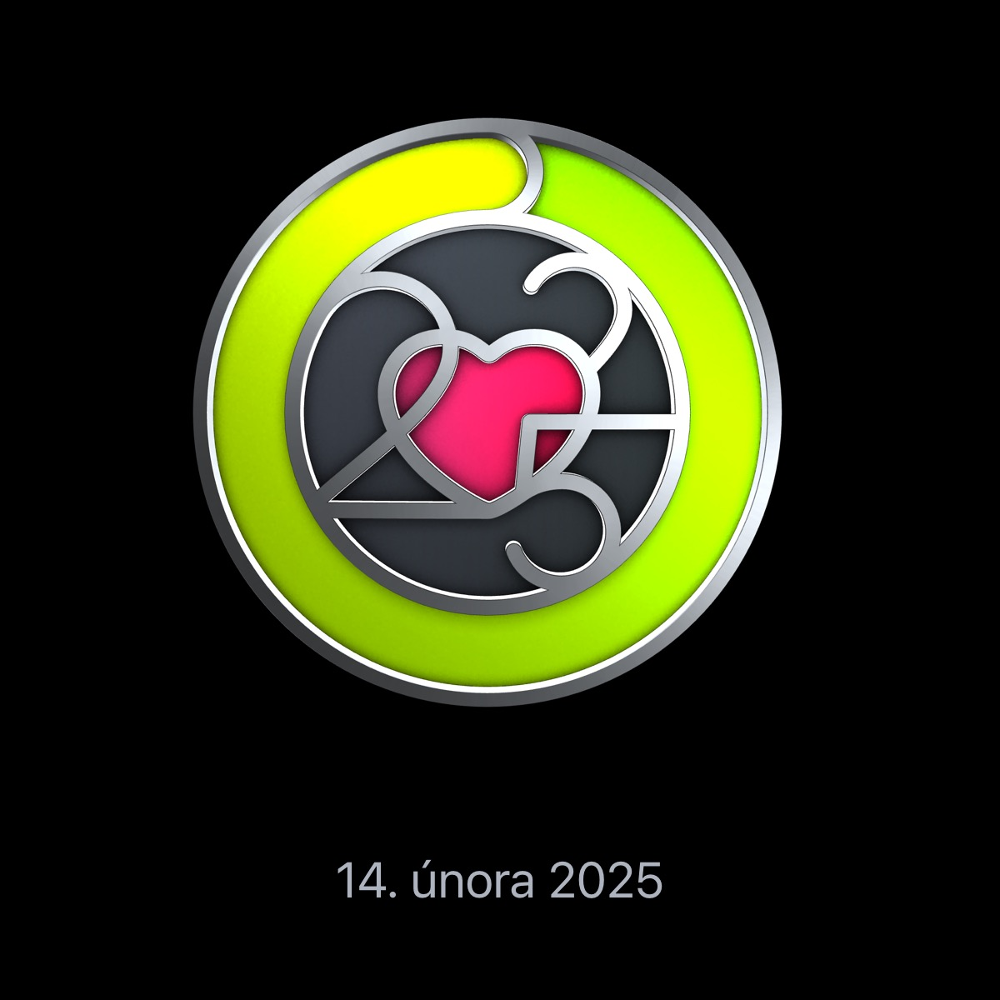
{kind=link}
13.únor
Cvičení a další nákupy
Jelikož jsem během týdne necvičil videa z challenge, dnes jsem si dal rovnou dvě – CARDIO Workout a STABILITY Stronger, a k tomu ještě jógu den 22.
Po obědě jsme vyrazili na nákup dalších věcí. Koupil jsem si iontové nápoje v akci 2+1, což mě vyšlo na 900 korun. Navíc jsem si pořídil legíny na cvičení a běh.
12.únor
Saunování a Vilgain
Vzhledem k rannímu sněžení jsme se rozhodli vynechat saunový svět Infinit, který má venkovní část, a vyrazili jsme do .Saunie., kde jsme nemuseli opouštět vnitřní prostory. Pro dnešní den jsem si vypnul kroužky, jelikož po sauně jsem neměl v plánu cvičit.
Dali jsme si spoustu saunovacích koleček, která jsme proložili čtecím odpočinkem, takže jsem přečetl další tři kapitoly z .Technodiverzity.. Zároveň jsme si dopřáli peeling v páře – zakoupil jsem si tropický gel, který nebyl příliš hrubý, ale zato velmi příjemný. Nakonec jsme zvládli ještě relaxační ceremoniál.
Po sauně jsme si skočili na večeři. Dal jsem si výbornou kuřecí quesadillu. Doma na nás už čekal balíček s produkty od .Vilgain.. Přišel mi iontový nápoj s příchutí Grapefruit Lemon, kapsle Hyaluronic Acid na klouby a pleť a oversized tričko. Z produktů mám radost a už se těším, až je všechny vyzkouším. Určitě dám v příštích týdnech vědět.
11.únor
Práce, čtení a jóga
A zase je tu další pracovní den, kdy jsem proseděl celou směnu. Naštěstí díky kroužku stání jsem měl tendenci si stoupat a procházet se. Alespoň jsem měl možnost pokračovat v četbě Technodiverzity. Večer jsem rozečetl půjčenou knihu Etika a sport, o které jistě napíšu v budoucích dnech.
Den jsem zakončil jógou – dnem 21, který je zaměřený na odpočinek. Začátek videa byl o lehkém pohybu a protažení, zakončen byl dechovým cvičením.
Zítra si vypnu kroužky v kondici, jelikož budu celý den v saunovém světě, kde hodinky i mobil zůstanou ve skříni a já si budu užívat klidu.
10.únor
Procházka pro knihu
Potřeboval jsem si vypůjčit knihu Etika a sport od Anny Hogenové. A protože momentálně nemám platnou šalinkartu, vyrazili jsme pěšky do knihovny. Mně osobně bylo šílené vedro v zimní bundě, jelikož dnes nebyla taková zima jako jiné dny.
Knihu jsme našli a dokonce vedle ní byla další kniha, Pohyb a tělo, od stejné autorky. Takže jsem si rovnou vypůjčil obě, abych nemusel absolvovat dvě procházky.
Nakonec nás procházka zavedla do obchůdku s ukrajinským zbožím, kde jsem si koupil výborný kečup a hořčici.
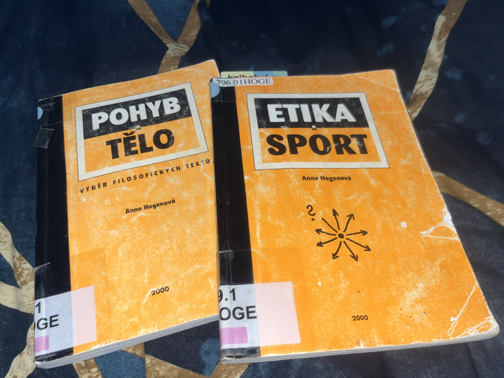
{kind=link}
9.únor
Jóga a jóga
Dnešní den bych zařadil mezi ty línější, ale i přesto mám za sebou cvičení jógy. Bohužel mě posledních pár lekcí z Yoga Dose už tolik nebaví. Do konce výzvy mi zbývá posledních deset dní, přičemž následující dvě videa jsou kratší, takže si je možná dám oba v jeden den, abych výzvu co nejdříve dokončil a mohl se posunout dál.
Cítím, že už začínám být na pokročilejší úrovni a daří se mi lépe, jen momentálně od jógy očekávám něco jiného. Proto už asi skončím s playlisty pro začátečníky.
V hlavě se mi rodí myšlenka, že bych si příští rok udělal lektorský kurz jógy. Do té doby se ale budu muset ještě zlepšit. A proč mě to láká? Chci se dozvědět více o těle jako takovém a zároveň své zkušenosti předávat dál a pomáhat ostatním.
8.únor
Nákupy, jídlo a málo vody
Kroužky uzavřeny, ale dnes jsem necvičil. Během dne jsme byli na nákupech, což zabralo poměrně dost času, a nachodili jsme se víc než dost. Koupil jsem si čtyři knihy od Shakespeara – a tím to prozatím končí.
Večer jsme se podívali na Šepot srdce. Dnes jsem toho dost snědl, ale na pití jsem zapomínal, takže to po víkendu budu muset napravit.
7.únor
Hledání námahy
Dnes bylo docela náročné uspokojit svou touhu po pořádném cvičení. Jako obvykle jsem začal jógou, která ale nebyla příliš obtížná. Pokračoval jsem posilováním břicha od FitFabu, které mě bohužel vůbec nezaujalo a nebavilo – alespoň jsem si to mohl odškrtnout z výzvy.
Nakonec jsem se vrátil k anglickému cvičebnímu videu. Trvalo sice jen pět minut, ale obtížnost už byla o poznání vyšší. Hned poté jsem pokračoval dalším videem od stejného tvůrce, které mi už dalo řádně zabrat. Takže nakonec jsem si i pěkně zacvičil!
Přikládám všechna dnešní videa.
6.únor
Odpočinkovější den
Už jsem cítil, že mé tělo potřebuje trochu odpočinku, a naštěstí to krásně vyšlo ve 30denní výzvě – dnes byla na programu jóga pro spaní. Poté jsem si ještě dal lekci LEGS Light, která byla velmi příjemná a uklidňující.
Po cvičení jsme vyrazili na oběd do indické restaurace a navštívili galerie s výstavami, které brzy končí. Nejvíc mě dnes zaujala výstava street artisty jménem Timo.
Už se blíží noc a vypadá to, že jsem vyhrál svou první soutěž v applovské aplikaci Kondice. Zítra nasdílím odznáček!
5.únor
Lenošení
Dnes mám takový líný den. Nějak se mi nechce nic dělat a jen bloumám po bytě. Samozřejmě jsem si dal jógu, ale tentokrát mě nijak zvlášť nenaplňovala, protože tam nebyly cviky, které by mě bavily. Tak jsem si potom dal Cardio Strong, které bylo jako obvykle velmi záživné.
4.únor
Hodinky a voda
Ráno jsem jel do školy na přijímačky. Byl jsem zvědavý, jak na tom bude můj tep během pohovoru, ale hodinky mi zaznamenaly hodnoty jen na začátku a na konci, takže neznám tep z průběhu. Trochu mě to zklamalo, protože mě to opravdu zajímalo.
Po pohovoru jsem si šel zaplavat, takže jsem poprvé vyzkoušel, jak hodinky fungují pod vodou, a musím říct, že jsem velmi spokojen. Samy rozpoznaly, že jsem ve vodě, a aktivovaly vodní režim. Měřily i uplavané délky, jen se mi stalo, že zaznamenávaly s mírným zpožděním, takže jsem nakonec uplaval o 50 metrů více, než jsem původně plánoval.

3.únor
Bolesti
Včera jsem si vytiskl siluety postav, do kterých si zakresluji, kde mě co bolí nebo kde cítím svaly po cvičení. Zelenou barvou zaznamenávám svaly, které po cvičení cítím. Červenou označuji velkou bolest a oranžovou menší nepříjemnosti, které se objevily během cvičení. Jsem zvědavý, jak se postupně budou barvy měnit.
V noci jsem se také registroval na Olympijský běh, který proběhne v Brně 18. června. A protože jsem byl mezi prvními přihlášenými, dostanu sportovní tričko v ceně startovného.

2.únor
Expandér
Jako každý den jsem si dal jógu a pokračoval cvičením podle videa. Dnes bylo na programu cvičení s expandérem, který už doma mám, ale bohužel je asi moc krátký, takže cviky nebyly tak intenzivní, jak bych si přál. Nakonec jsem to završil pětiminutovým tréninkem na ABS.
1.únor
Práce a cvičení
Postupně zjišťuji, že život s hodinkami je o něco příjemnější. Dnes jsem sice strávil celý den v práci, ale i tak mám na hodinkách zaznamenáno spoustu pohybu, včetně stání a cvičení. Dnešní trénink byl o něco jednodušší – zahrnoval dýchací jógu a posilování rukou, které nebylo příliš náročné. Nakonec jsem to ale završil pořádným HIIT cvičením, takže se teď cítím opravdu skvěle. Navíc jsem začal novou výzvu od FITFAB Strong.
Obrázek sdílím s vámi, abyste si mohli zacvičit také!

Leden
31.leden
Hodinkování
Druhý den testuji hodinky a zatím jsem velmi spokojen. Ještě včera se mi podařilo uzavřít i poslední kroužek. Dnes ráno jsem hned splnil dva – pohyb a cvičení. Momentálně mám nastavený pohybový cíl na 250 kilokalorií a cvičení na 30 minut. Cvičení si prozatím nechám na 30 minut, ale pohyb možná časem zvýším, pokud zjistím, že ho zvládám snadno. Zatím tomu ale dám ještě chvíli čas.
30.leden
Hodinky
Ještě včera v noci jsem si zprovoznil Apple Watch a dnes už naplno testuji, co všechno zvládnou. Musím říct, že už po probuzení jsem měl radost, protože jsem měl rovnou změřený spánek.
Hned ráno jsem si zacvičil – dal jsem si dvě videa od Yoga Dose, konkrétně den 11 a 12, a pokračoval velmi vyčerpávajícím videem ROCK Strongest. Dnes se mi tak podařilo splnit všechny kroužky, jen si ještě budu muset párkrát stoupnout, abych uzavřel i ten poslední.

29.leden
Výlet do Prahy
Za odměnu jsme dnes vyrazili do Prahy. Prvním bodem výletu byla Kunsthalle s úžasnou výstavou umělkyně Chiharu Shiota. Následně jsme zamířili na Kampu, kde jsem již podruhé shlédl výstavu Identita, a poté rovnou na oběd do italské restaurace, kde jsem si dal nejlepší pizzu za poslední dobu.
Po obědě jsme navštívili výstavu fotografií Libuše Jarcovjákové a jako poslední galerijní zastávkou se stal DOX. Ve zbytku času jsme ještě zavítali do Foodstocku – veganského podniku, kde mají ty nejlepší Gyoza knedlíčky.
(Jako bonus dnes přikládám fotku pizzy)

28.leden
Státnice
Po probuzení jsem si zacvičil desátý den programu Yoga Dose a absolvoval lekci EXPLODE Stronger zaměřenou na intervalové cvičení.
Po cvičení jsem se věnoval hygieně, abych se připravil na státnice, a ještě jsem si pro jistotu dostudoval posledních pár věcí.
Následně jsem vyrazil na státnice, které jsem úspěšně zvládl.
27.leden
Cvičení a příprava
Ráno na probrání jsem si zacvičil již devátý den z programu Yoga Dose a pokračoval lekcí Be Stronger – Party, která byla velmi zábavnou taneční kardio jízdou.
Dnešní den však převládá sezení u počítače, kdy se ještě připravuji na státnice, které mě čekají již zítra.

26.leden
Další neděle
Je tu další neděle, se kterou přichází odpočinkovější den.
25.leden
Gaučování v páru
Dnešní den začal netradičně – vyrazili jsme hned ráno pro nový gauč. To znamenalo takovou menší „stěhovací posilovnu," protože přenášení gauče je samo o sobě solidní workout. 😄
Večer jsme se pustili do párové jógy. Bylo to něco úplně jiného než klasické cvičení, na které jsem zvyklý. Párové cviky jsou o dost náročnější, protože vyžadují nejen sílu a rovnováhu, ale i spolupráci a vzájemnou synchronizaci. I přes obtížnost to ale byla velká zábava a skvělý zážitek!
24.leden
Tři jógy a jedny stehna
Dnešní den jsem zasvětil pořádnému cvičení. Začal jsem sedmým dnem jógy, který byl spíše klidnější a zaměřený na relaxaci a lehké protažení. Využil jsem energii a hned navázal osmým dnem jógy, který byl úplným opakem – velmi intenzivní a silový trénink, který mě opravdu donutil máknout.
Poté jsem si dopřál protažení nohou, což mi po předchozích dnech skvěle bodlo. Na závěr jsem si ještě přidal Lower Body cvičení, které mi dalo zabrat hlavně na stehna. Celkově jsem dnes zvládl pořádnou kombinaci klidného i náročného tréninku a mám ze sebe dobrý pocit! 😊
23.leden
Stehna a kyčle
Dnes jsem začal šestým dnem jógy. Stále pociťuji bolesti kyčlí, což mi komplikuje provedení některých balančních pozic. Rozhodl jsem se proto více zaměřit na posilování stehen a jejich stabilitu.
Pustil jsem si intenzivní video zaměřené na dolní část těla Lower Body, které mi dalo pořádně zabrat. Po cvičení jsem měl stehna úplně v ohni, což vnímám jako znamení, že jsem na správné cestě.
Nakonec jsem si přidal ještě video o tom, jak se naučit rozštěp. Obsahovalo spoustu skvělých cviků na protažení nohou a zlepšení flexibility, což by mohlo pomoct i mým kyčlím.
22.leden
Míček, činky
Ráno jsem si zacvičil s nově pořízeným míčkem. Cvičení na nohy s ním je pro mě velmi přínosné, zvláště protože mám plošší nohy. Míček mi také skvěle posloužil k mačkacím cvičením na ruce, což se ukázalo jako překvapivě efektivní.
Dále jsem otestoval svou sílu a výdrž s dvoukilovými činkami. Držel jsem je v napnutých rukou, abych prověřil svaly a výdrž. Zatím jsem vydržel dvě minuty, což považuji za solidní výkon. Postupně se budu snažit tento čas ještě prodloužit.
21.leden
Workshop a Nosferatu
Dnes jsem se zúčastnil workshopu programování hudby v programu SuperCollider. Workshop byl skvělý, i když velmi dlouhý. S přicházející tmou na mě padala únava, ale i tak jsem si odnesl spoustu nových zkušeností, které určitě využiji ve své budoucí tvorbě.
Po workshopu jsme ještě vyrazili pro chybějící míček na cvičení a zakončili den návštěvou kina. Šli jsme na film Nosferatu. Už jsem viděl předchozí verze tohoto filmu z let 1922 i 1979, ale musím říct, že tento byl pro mě zatím nejzajímavější.
20.leden
ABS a kyčel
Jak jsem si slíbil, dnes jsem se pustil do cvičení. Začal jsem jógou od Yoga Dose a zvládl jsem den 3 a 5. Myslel jsem, že už mám veškeré potřebné vybavení na cvičení, ale dnes jsem zjistil, že mi přece jen něco chybí – míček. Nepodařilo se mi najít žádnou alternativu, a tak jsem jedno z videí raději přeskočil.
U jógy jsem pocítil bolest v levé kyčli při balanční pozici. Snažím se přijít na to, kde může být problém – zda je to otázka slabších svalů nohou, nebo ještě nerozhýbané kyčle. Proto jsem se rozhodl zakončit dnešní trénink speciálním procvičením kyčlí.
Předtím jsem si ještě zaposiloval ABS legs – dnešní cvičení bylo tedy pořádnou zkouškou pro břicho. Přesto si všímám, že jsem vylepšil svou techniku práce s břišními svaly, což je skvělý pocit.
19.leden
Poklidno
Vstávání ráno v téhle tmě je opravdu náročné, ale práce je práce. Venku bylo šero, přesto odpoledne dorazilo dost návštěvníků. Dnes už si cvičení nechám ujít, ale zítra mám volný den, takže to zase pořádně rozjedu. V únoru plánuju začít běhat venku, až budu mít za sebou všechny důležité události, jako jsou státnice a přijímačky. Nechci riskovat, že bych onemocněl.
18.leden
Nákupy po týdnu
Po týdnu jsem se znovu vydal na nákupy. Konečně jsem si pořídil zimní boty – ideální načasování na leden! Zaskočil jsem také k operátorovi, abych si vyžádal slevu na hodinky, kterou mi nabídli. Bohužel je nemají skladem, takže budu muset počkat asi tři týdny. Na závěr jsem si udělal radost korkovými bloky na jógu.
17.leden
Volno
Dnes mě pro změnu čekal den volna, a tak jsem si dovolil chvilku poležet déle. Jakmile jsem vstal, pustil jsem se do cvičení – 40 minut programu Work Stronger a poté druhý den z Yoga Dose.
16.leden
Kopec mírnější a kroužek II.
Dneska jsem razil do práce na mírnější kopec. Kroužek chůze v kondici splněn. :)

15.leden
Kopec a kroužek
Dneska jsem razil do práce na kopci. Kroužek chůze v kondici splněn. :)

14.leden
Pořádné cvičení
Stejně jako minulý týden jsem se po pár dnech volna rozhodl pořádně si zacvičit. Po svém oblíbeném espresso tonicu jsem dnešní cvičení odstartoval jógou z 30denního programu Yoga Dose, se kterým jsem cvičil před čtyřmi lety. První video je zatím spíše pro začátečníky, takže mi posloužilo jako ideální rozcvička.
Poté jsem naskočil na svůj osvědčený program BE Stronger, který už cvičím poněkolikáté a pokaždé na sobě vidím pokroky. Po tomto videu jsem pořádně cítil nohy, a tak jsem si je protáhl cvičením zaměřeným na kyčle. Na závěr jsem se vrhl na Sixpack Shortcut.
V příštích dnech bych se chtěl více zaměřit na posilování nohou, protože při několika dřepech jsem si uvědomil, že tady mám ještě co zlepšovat.
Přikládám vám dnešní videa – třeba se někdo přidá!
13.leden
Inventura
Dnes mě čekala inventura v práci, při které jsem přeskládal spoustu velkých knih a nachodil opravdu hodně kroků. I když jsem si dnes nezacvičil, měl jsem i tak pořádnou fyzickou námahu.
12.leden
Neděle
V neděli se nedělá. :)
11.leden
Nákupy
Dnes jsem si pořídil podložku pod koleno na cvičení jógy a k tomu i pásek na protahování. Mám z toho velkou radost a už se nemůžu dočkat, až všechno vyzkouším při cvičení. Plánoval jsem si také koupit korkovou karimatku, ale bohužel ji neměli skladem. Budu si ji tedy muset objednat z e-shopu.
10.leden
Je pátek
Dnes jsem si dal odpočinkový den. Čekám, až se mi ozve operátor ohledně hodinek, tak si užívám trochu klidu.
9.leden
Chytré hodinky
Po včerejším cvičení mě napadlo, kolik kalorií jsem mohl spálit, a tak jsem se rozhodl dnes zajít k mobilnímu operátorovi. Mám v plánu zjistit, zda bych mohl získat slevu na chytré hodinky k tarifu. Momentálně mám zaznamenané pouze aktivity jako běh a chůze, které teď v zimě nedělám tak často. Hodinky by mi mohly pomoct lépe sledovat i cvičení a další aktivity. Tak uvidíme, jak lov na hodinky dopadne!
8.leden
Pekelný trénink
Texty mám dopsané a odeslané ke konzultaci, takže se cítím silněji a lépe. Tím, že mám teď volnější čas, jsem se rozhodl pro větší cvičení. Dnes jsem si zacvičil podle čtyř videí. Začal jsem robotickou lekcí, pokračoval pekelnou jógou, poté jsem si dal 10minutovou posilovací tabata lekci a vše zakončil odpočinkovější jógou. Celkem to bylo cvičení o délce hodiny a čtvrt. Dnes to bylo opravdu intenzivní, hlavně na břicho a záda, a cítím, že to stálo za to!
7.leden
Power
Dnes jsem se věnoval psaní a dokončování tezí ke státnicím, ale i přesto jsem si našel čas na cvičení. Začal jsem pětiminutovým workoutem a pokračoval intenzivní power jógou. Dnes jsem si dal opravdu do těla, hlavně jsem to cítil na rukou, které mám ještě trochu oslabené po nemoci. Ale pomalu se dostávám zpět do formy.
6.leden
Rýmová jóga
Ráno jsem si konečně připravil svůj oblíbený espresso tonic. Poté jsem se pustil do péče o rostliny – odstranil jsem ty, které už nemají šanci na přežití, a přesunul ostatní. Bohužel letos v zimě spousta mých kytek pomalu odumírá, takže uvidím, které z nich přežijí do jara.
Zvážil jsem se po svátcích a zjistil, že se mi váha vrátila zpět, ale nevadí. Teď budu mít konečně dostatek prostoru na pořádné cvičení. Dnes jsem si dopřál flow jógu zaměřenou na zpevnění celého těla. Cvičení bylo příjemné, i když je trochu náročné cvičit jógu s plným nosem kvůli přetrvávající rýmě. :)
5.leden
Novoroční lenost 2
Ráno jsem si myslel, že nevstanu. Neustále jsem odkládal budík, protože venku byla stále tma a zima. Tento víkend je můj poslední pracovní v tomto měsíci, poté mě čeká už jen jedna pracovní neděle, jinak budu chodit do práce jen ve všední dny.
Novoroční lenost mě ale neopustila ani dnes. Celý den jsem jen zíval a měl pocit, že bych nejradši spal. Na zítřek mám však jasně dané plány. Po pořádném vyspání si zacvičím a pustím se do psaní textů ke státnicím.
4.leden
Novoroční lenost
Dnes jsem byl opět v práci, ale musím přiznat, že na mě dolehlo něco, co bych nazval novoroční leností. Myslím si, že je to docela normální pocit – po prázdninách, které jsem vlastně ani pořádně neměl, protože jsem byl nemocný a věnoval se přípravě na státnice.
Takže to dneska nebudu nijak hrotit. Po práci si prostě lehnu, odpočinu si a pustím si něco na relax. Někdy je třeba se prostě jen vypnout a načerpat energii na další dny.
3.leden
Světelný park
Dnes jsem se ke cvičení nedostal. Cítím, že moje imunita ještě není úplně v pořádku, a nechci nic uspěchat. Lepší je teď trochu ubrat a neriskovat, že se nemoc vrátí.
Večer jsme si ale udělali příjemnou procházku ve světelném parku, což mě potěšilo – alespoň trochu pohybu na čerstvém vzduchu. Teď mě čeká sprcha a pak konečně poslední epizoda Squid Game. Ideální zakončení dne!
2.leden
Čtení a práce
Nový rok začal v klidném tempu. V práci bylo dnes poměrně volno, což mi umožnilo ponořit se do četby, kterou potřebuji zpracovat ke státnicím. Bylo příjemné mít čas na soustředění.
Zítřek mám už naplánovaný – čeká mě cvičení, abych rozhýbal tělo, a pak se budu plně věnovat práci na státnicích. Ať to jde hladce!
1.leden
Nový rok
Přeji všem krásný a šťastný nový rok! Ať je plný radosti, zdraví, úspěchů a nezapomenutelných zážitků.
Prosinec
31.prosinec
Silvestr
Dnešní den jsme prožili poměrně poklidně, i když s nádechem zábavy. Dnes jsme šli spát až ve dvě ráno, protože jsme hráli dlouhou a napínavou karetní únikovou hru. Během dne jsme se každý věnovali svým věcem – někdo pracoval, jiný se učil. Odpoledne jsme si ale udělali malou procházku kolem chatek, což bylo příjemné zpestření. Nechyběla ani zábava na sněhu – ježdění na talíři se stalo hitem dne!
Teď už se pomalu chystáme na večerní oslavu. Silvestr je tu, tak ať stojí za to!
30.prosinec
Procházka starého roku
Dnes jsme se vydali na přednovoroční vycházku kolem Vírské přehrady. Byla to opravdu krásná procházka. Moc lidí jsme cestou nepotkali, ale příroda nám to bohatě vynahradila – viděli jsme nádherné zamrzlé rampouchy, které zdobily skály. Po procházce jsme zamířili na oběd do Bystřice. V restauraci to bylo rušné – postupně jim docházelo skoro všechno jídlo, takže jsem nakonec skončil u klasiky: řízku. Ale i tak to byl příjemný den!

29.prosinec
Vyrazili jsme na výlet
Konečně mi je dobře, takže jsme mohli vyrazit na chatu oslavit Silvestra. Bohužel budeme muset vynechat wellness, a co se týče lyžování, tak na to nemáme lyže. Ale i tak si to určitě užijeme!
28.prosinec
Klesání
Včera večer jsem měl teplotu 39 stupňů. Byla to chyba jít do práce a snažit se nemoc přechodit. Po návratu jsem se pořádně prospal a během noci jsem spal klidně, bez buzení. Dnes mi teplota postupně klesala, až jsem nakonec úplně bez horečky.
Až budu mít více času, rád bych se zaměřil na to, jak posílit svou imunitu, aby lépe zvládala podobné situace.
27.prosinec
Nemoc den 2
Nemoc stále přetrvává, ale přesto jsem musel do práce. Naštěstí se mi zdá, že se to už pomalu zlepšuje. Doufám, že se brzy dám úplně do pořádku. 💪
26.prosinec
Neklid
Bohužel se dnešní klid a odpočinek změnily v nemoc. Doufám, že mě to brzy přejde, protože za dva dny máme odjíždět na pronajatou chatu. Držte mi palce, ať se dám rychle do pořádku! 🤞
25.prosinec
Druhý den vánoční
Druhý den Vánoční byl ve znamení rodinného setkání a pokračování s rozdáváním dárků. Co se týče sportu, ten se letos s Vánocemi zcela minul, ale nevadí – vše doženu později. Vánoce jsou přece o klidu, pohodě a odpočinku, a přesně tak jsem je dnes vnímal. 🎄
24.prosinec
Štědrý den
Všem přeji veselé Vánoce a krásný nový rok! 🎄✨ Hlavně si dnes dopřejte zasloužený odpočinek. Pokud máte chuť si trochu zasportovat, klidně do toho, ale pamatujte, že dnešek není o výkonech – užívejte si klidu, pohody a kouzla svátečního dne. 😊
23.prosinec
Dílničky
Poslední den před VánociDnešní den jsem strávil na radnici v dílničce pro děti. Stejně jako každý rok mě to moc bavilo – je radost sledovat, jak si děti tvoření užívají. Loni jsem byl na stánku s origami Santy, a letos jsem pomáhal u stánku, kde jsme vyráběli přáníčka z mašlí nebo dokonce vyšívali. Přikládám fotku jednoho přáníčka, které jsme společně vytvořili.
Po dílničkách jsme, jako už tradičně, zakončili den na vánočním pivu. Letos se naše debata hodně stočila k pedagogickým tématům, což není překvapivé – všichni máme nějaké zkušenosti s prací s dětmi, ať už z táborů, kroužků nebo přímo ze školství. Bylo fajn sdílet zážitky a nápady.

22.prosinec
Líný den
Je to znát – dnes je poslední adventní neděle. Za dva dny je Štědrý den a já se už pomalu mentálně nalazuji na Vánoce. Zítra, jako každý rok, vyrážím vypomáhat na vánoční radnici, kde s táborem tradičně pořádáme dílničky pro děti.
Dnešek byl ale, co se produktivity týče, úplně líný. Byl jsem v práci, kde bylo poměrně klidno – lidí moc nechodilo. Přesto jsem nebyl schopen být nějak aktivní, dokonce jsem si ani nečetl, když byl prostor. To už je na mě opravdu nezvyklé.
Večer doma jsem si nakonec nezacvičil. Ale vzhledem k tomu, že jsou Vánoce skoro za dveřmi, možná si takovou lenivost mohu výjimečně odpustit, no ne? 😊 Na příště si ale slibuji, že se polepším!
21.prosinec
Málo místa na jógu
Rozhodl jsem se dnes zacvičit jógu u sebe v pokoji. Bohužel jsem ale zjistil, že na to nemám dostatek prostoru – zvlášť na některé širší pózy, při kterých jsem neustále narážel do nábytku. Proto jsem jógu tentokrát vynechal a místo toho si dal cvičení zaměřené na výdrž s činkami.
Oproti minulému tréninku jsem zaznamenal zlepšení – vydržel jsem o celou minutu déle. Takže i přesto, že jsem jógu nakonec přeskočil, mám ze sebe dobrý pocit. Cítím, že postupně dělám pokroky.
20.prosinec
Odpočinek č.2 a úklid č.2
Dnešní volný den jsem opět využil k dokončování restů a pořádnému cvičení. Ráno jsem začal 40minutovým cvičením, které kombinovalo cardio a core, a poté jsem přidal balanční jógu. Tato kombinace byla skvělá – nejprve jsem své tělo pořádně rozhýbal a procvičil a následně ho během jógy uklidnil. I po cvičení mě tělo stále příjemně hřálo, takže jsem si dal ledovou sprchu, což mám po cvičení v oblibě. Je to pro mě daleko příjemnější než sprchování horkou vodou.
Pokračoval jsem také v plnění dalších restů, konkrétně jsem se pustil do úklidu číslo 2. Kromě toho jsem si dal tu práci a konečně zkompletoval své playlisty, které jsem následně vložil na stránku O projektu. Tak se určitě mrkněte!
I když jsem se dnes nevěnoval přípravě na státnice, cítím, že jsem měl produktivní den.
19.prosinec
Odpočinek
Dnes jsem si dopřál malý mentální odpočinek a zároveň jsem dodělal resty, které jsem měl. Konečně se mi podařilo zabalit všechny dárky na Vánoce, uklidil jsem doma a dal si intervalové cvičení. To bylo náročné a ještě několik hodin poté jsem cítil únavu ve svalech, ale teď už je vše v pohodě.
Rozhodl jsem se na chvíli odpočinout od školních povinností, neřešil jsem státnice ani přijímačky. Místo toho jsem si pustil několik dílů z první série RuPaul’s Drag Race, kterou jsem neviděl už roky.
18.prosinec
Obhajoba
Závěrečné prezentace děl zabraly zhruba sedm hodin. Ráno jsem vyrazil už v deset, což znamenalo, že jsem si nestihl zacvičit. Domů jsem dorazil až po osmé hodině večer, kdy jsem se už jen najedl.
I přesto mám ze dnešního dne dobrý pocit. Myslím, že obhajoba proběhla v pořádku, i když jsem byl ve stresu. :)
A zítra si to cvičení jistě vynahradím. A jako bonus přidávám fotku díla.

17.prosinec
Šplouchance
Plavání je velmi zvláštní sport, když se podívám na veřejnost. Píšu to proto, že jako běžec, když potkám jiného běžce, mávneme si, pozdravíme se a běžíme dál nebo chvíli pospolu. Ale u plavání to vypadá, že vítězí ten, kdo nejvíce šplouchne rukou do vody. Často se mi stává, že musím odvracet hlavu od ostatních plavců, protože mě nechtěně ohodí vodou. Asi si budu muset pořídit plavecké brýle.
Po plavání jsem si odpočinul a večer se vydal do školy nainstalovat své dílo k veřejné prezentaci. Držte mi palce, snad to zítra dobře dopadne.
Ze dnešního dne mám dobrý pocit – uplaval jsem 750 metrů a nainstaloval své dílo.
16.prosinec
Po pauze
Konečně! Po čtyřech dnech jsem si ráno připravil svůj oblíbený espresso tonic a hned poté si dal skvělé CORE strong cvičení zaměřené na posilování břišních svalů. Na začátku jsme se krásně rozcvičili, a pak následovalo svižné a intenzivní posilování středu těla. Po cvičení se cítím naprosto skvěle!
Během tréninku ze mě lil pot, takže jsem si při každé pauze musel utírat obličej do ručníku. Dnešek mi opravdu zvedl náladu a znovu mě nakopnul.
15.prosinec
Poslední tažení
Poslední den ze série pracovních dní. Jsem rád, že si zítra budu moct trochu přispat. Už začínám být unavený a rýma mě stále neopouští. Až do poslední chvíle pracuji na projektu, který budu v úterý instalovat a ve středu prezentovat ve škole. Kvůli tomu jsou teď mé dny plné práce a tvorby, a vlastně jsem ani neměl moc chuť si zacvičit.
Věřím, že se to brzy všechno uklidní, a budu mít zase prostor i energii na to, abych si mohl během dne zasportovat.
14.prosinec
Práce, řízení, parkování
Teď už sedím v klidu doma, ale dnešek nebyl vůbec sportovní. Opět jsem byl v práci, kam jsem jel autem, a z práce zase zpět. Potřeboval jsem ještě vyzvednout vánoční dárek, takže jsem se zastavil v blízkém nákupním centru, kde na mě čekala objednávka. Bohužel vánoční shon už je v plném proudu, a poprvé se mi stalo, že v nákupáku nebylo vůbec kde zaparkovat. Po dvaceti minutách kroužení a strávení času v koloně na střešním parkovišti jsem to vzdal a zaparkoval raději jinde. Zboží jsem vyzvedl, ale lidí tam bylo opravdu jako dav na koncertě. Cestou domů jsem se ještě zastavil v obchodě pro nudle a sójovku, takže dnes jsem v autě strávil celkem hodinu.
V práci to bylo dnes opravdu intenzivní. Chodily davy zákazníků a navíc mi nefungovala Wi-Fi, takže jsem se nachodil po obchůdku, když jsem kontroloval různé cenovky. Ale musím se pochválit za svoje pracovní tempo, protože jinak bych nezvládl obsloužit ani polovinu zákazníků.
PS: Rýma se mě stále drží.
13.prosinec
Rozjezd/Dojezd
Je po půlnoci a opouštíme sál, kde se odehrál jeden z nejenergičtějších koncertů, po kterém jsem si připadal, jako bych absolvoval několik cardio lekcí. Rozjezd nám měl jet v jednu hodinu, takže jsme si ještě dali poslední pivo. Vyrazili jsme na zastávku, ale rozjezd nám ujel přímo před nosem, takže jsme nakonec zavolali Uber.
Ráno mě přepadla silná kocovina. Přece jen jsem včera vypil poměrně dost alkoholu, a mé tělo na to poslední dobou není příliš zvyklé, protože se snažím žít zdravěji. Když už někde jsem, obvykle si dám jen jedno pivo nebo drink. Navíc už ve středu jsem pociťoval náznaky přicházející nemoci, která v kombinaci s alkoholem dnes opravdu udeřila. Večer už se ale cítím o něco lépe, takže dnešní volný den byl zaměřený hlavně na odpočinek a rekonvalescenci.
12.prosinec
Bar a koncert
Po práci jsem šel na večeři s Olliem. Byli jsme v Baru, který neexistuje, kde si každý z nás dal burger a dva drinky. Tento podnik máme rádi díky zajímavé nabídce nápojů. Jako obvykle jsem si objednal drink Anonym, což znamenalo, že jsem si nechal namíchat záhadný drink, aniž bych věděl, co přesně piji.
Po večeři jsme zamířili na koncert skupiny MIDI LIDI. Bylo to naprosto úžasné. Koncert byl kompletně vyprodaný, což bylo poznat – lidí tam bylo hlava na hlavě. Skupina odehrála celkem 17 písniček a celý koncert trval dvě hodiny. Ty dvě hodiny jsme protancovali tak intenzivně, že z nás lil pot a postupně jsme sundávali vrstvy oblečení. Koncert skončil přesně o půlnoci.

11.prosinec
Progres
Po včerejším cvičení mě ještě trochu bolí svaly, ale při dnešní józe jsem zvládl udržet delší dobu pozici v kliku. Vnímám tedy, že nějaký pokrok tu určitě je. Také si všímám, že se mi zlepšuje držení těla – daří se mi lépe udržovat narovnaná záda, což mě moc těší.
Dnes to ale už zabalím, protože na mě leze rýma a bolí mě v krku, takže se necítím úplně fit. Plánuji si dopřát pořádný odpočinek a dobře se vyspat. Zítra mě čeká práce a večer koncert skupiny MIDI LIDI. Dnešek zakončím písničkou Strom, která má úžasný rytmus – ideální třeba na běh.
Enjoy it!
10.prosinec
Selhání - zlepšení
Je možné selhat ve sportu? Přemýšlím nad tím kvůli dnešnímu dni, kdy jsem se postavil na váhu – pravidelně se vážím každý týden. Dnes mi váha ukázala kilo navíc. Říká se, že při hubnutí je těžké sledovat čísla na váze, protože se tuk mění ve svaly. Bohužel to jde ale nějak pomalu. Přesto si tím nenechám kazit náladu.
Mé dnešní selhání však přišlo při samotném cvičení. Po třech pracovních dnech, kdy jsem se k žádnému cvičení nedostal, jsem si to chtěl dnes vynahradit intenzivnějším tréninkem. Začal jsem pětiminutovým workoutem na celé tělo. Stále si uvědomuji, že mám určité mezery ve svalových cvičeních, na kterých musím ještě pracovat. Občas u některých cviků zpomalím nebo si dám pauzu. Po skončení následovalo další video, tentokrát 25minutové Power Strength, a ukázalo se, že to je skutečně výzva.
Do poloviny videa jsem se ještě držel, ale v druhé polovině už bylo mé tělo na hraně. Stehna tuhla, ruce byly unavené, levé zápěstí mě bolelo natolik, že jsem se o něj nemohl pořádně opřít, a moje skoky do výšky spíš připomínaly hod kamínkem. Dokonce jsem slyšel praskání kloubů. Při poslední sérii jsem to už vzdal, posadil se a s obdivem sledoval předcvičujícího. Abych se po tomto výkonu trochu uklidnil, zakončil jsem trénink jógou na protažení kyčlí, která mi dnes opravdu přišla vhod.
Mé tělo bylo zcela zahřáté a zpocené. I když jsem si během cvičení připadal, že jsem dnes selhal, vzpomněl jsem si na Murakamiho. Při jeho triatlonu také přišla chvíle, kdy plavání vzdal. Vylezl z vody a šel znovu – potřeboval zjistit, co dělá špatně. Na druhý pokus se mu plavalo lépe. Nevzdal se a příští rok trénoval s motivací zvládnout další závod až do konce. Vnímám to dnes podobně. I když jsem trénink nedokončil, beru to jako příležitost upravit svůj plán.
Nemohu se znovu takto přepínat. Proto teď budu oddělovat cardio a posilování na dvě samostatná cvičení. Každý den zařadím kliky, prkno a dřepy a budu sledovat svůj postup. Musím respektovat své tělo – nebudu na sebe tlačit a budu se posouvat jen tak, jak mi mé tělo a svaly dovolí. Výdrž už mám dobrou, ale musím nechat svaly pracovat svým tempem.
I teď, při psaní tohoto příspěvku, cítím, jak mi v žilách proudí horká krev, jak mi tepe srdce a tělo je stále napjaté. Pomohla mi až velmi studená sprcha, která mě zklidnila. Dnešní den však vnímám jako velmi plodný. Díky tomuto cvičení jsem přišel na myšlenky, které mě – a možná i vás – mohou posunout dál.
Pro dnešek se s vámi loučím.
9.prosinec
Konec knihy
Jak jsem již včera avizoval, dnes jsem knihu dočetl, a jak jsem řekl, tak se stalo.
Poslední kapitola mi přišla jako nejupřímnější text o Murakamiho sportovních výkonech. Rozepisuje se v ní o své účasti na triatlonu a o všech překážkách, se kterými se potýkal. A upřímně si nejsem jistý, jak moc se chci rozepisovat, o čem v této kapitole píše, protože bych nerad vyzradil příliš mnoho těm, kteří se na knihu teprve chystají. Přesto si tu dnes odložím jednu větu, která mě oslovila. Pro vás ji ale zcela vytrhnu z kontextu:
„No, jakmile bude jednou závod zahájen, nebudu už (nejspíš) mít kdy myslet na hlouposti…“
8.prosinec
Maraton a Murakami
Zase jsem v práci, ale dneska je tu větší klid. Nechodí sem tolik lidí jako včera, takže jsem si našel čas na čtení. Stihl jsem přečíst tři kapitoly a zítra dočtu poslední.
Musím říct, že mě Murakamiho psaní o jeho maratonech velmi překvapilo. Popisuje své předchozí maratony (42,195 km), které zaběhl bez přestávky a s dobrým časem. Když si to čtu, cítím se trochu zahanbeně. Vzpomněl jsem si na svůj závod okolo přehrady a na to, jak jsem byl pyšný. :)
Ale uvědomuji si, že každý z nás má jinou startovní čáru, potřebuje jinou přípravu a dosahuje jiných výsledků. Co mě však opravdu inspirovalo, je myšlenka, že bych si jednoho dne mohl také zaběhnout maraton. A kdo ví – třeba si jednou splním sen a zaběhnu originální maraton z Marathonu do Athén, o kterém Murakami píše.
Tak snad, až někdy budete číst můj blog za pár let, budu psát o tom, jak jsem zaběhl svůj první maraton, a možná to bude právě v Řecku.

Trasa autentického běhu maratonu
(zdroj: Athens Authentic Marathon)
7.prosinec
Vánoční trhy
Po práci jsme byli s rodinou na vánočních trzích. Protože byla sobota, hemžilo se to tam lidmi. Kličkovat mezi nimi bylo jako překonávat opičí dráhu. Vánoční trhy vlastně trochu připomínají sportovní hry – všude spěcháte, vyhýbáte se davům, a ještě se přitom protáhnete při nakukování do různých stánků.
Musíte držet vytrvalou a stabilní pozici při čekání ve frontě a zároveň být ostražití, aby vás někdo nepředběhl. Když si nesete jídlo, je klíčová pevná ruka, abyste úspěšně prošli mezi lidmi. Pokud je namrznuto, náhle se stáváte nahodilými bruslaři. A hlavně – bez týmové strategie se neobejdete, pokud chcete splnit všechny cíle a dosáhnout pomyslné výhry.
Pro dnešek si myslím, že zápis do blogu stačí. Uvědomuji si, že přirovnávat trhy ke sportovním hrám je trochu potrhlé, ale proč ne?
6.prosinec
Sněží! Vnitřnímu sportu ZDAR!!
Sněží. Vše je pokryté bílou peřinou a město tradičně uvízlo v kolonách. Jsem rád, že dnes nemusím nikam cestovat a mohu si doma v klidu zacvičit. Jsem vděčný, že existuje tolik možností na domácí cvičení, protože za současných podmínek by byl běh venku téměř nemožný. Chodníky se proměnily v kluziště a venkovní teplota vyžaduje minimálně pět vrstev oblečení – a ani to by možná nestačilo. Takže se na nějakou dobu loučím s běháním venku a plně se soustředím na aktivity uvnitř.
Doma už delší dobu cvičím různé druhy tréninků, ať už jde o kardiovaskulární cvičení, nebo jógu. Pravidelně chodím plavat a možná se odhodlám i k návštěvě posilovny. Ještě si to ale promyslím, protože cvičení s vlastní váhou mi přijde smysluplné a účinné.
Co mám ale na zimu určitě v plánu, je bruslení na ledě a snad i moje premiéra na lyžích. Na Silvestra vyrážíme s přáteli na chatu, což bude zahrnovat i lyžování. Nikdy jsem na lyžích nestál, zatím jsem si užíval spíše zimní boby. Musím přiznat, že z lyžování mám trochu obavy, ale mám skoro celý měsíc na to, abych se mentálně připravil.
Jako bonus dnes přidávám fotku ze včerejší mikulášské akce

5.prosinec
Mikuláš, Kyčle a Gaga
Je sice teprve odpoledne, ale už píšu dnešní příspěvek, protože večer nás čeká naše každoroční tradice s táborovými přáteli – obcházení známých jako Mikuláš, čerti a andělé. Abych si uvolnil odpoledne na psaní a dodělání restů, zacvičil jsem si už ráno.
Po včerejším pohybovém workshopu, kde jsem musel kvůli bolesti v kyčli trochu zpomalit, jsem si vybral ranní jógu zaměřenou právě na protažení kyčlí. Jóga byla poměrně krátká, tak jsem ji doplnil půlhodinovým HIIT cvičením, které bylo tentokrát spíš pro zábavu. Šlo o taneční cvičení na písničky od Lady Gaga. Právě díky tomuto zážitku jsem si založil playlist s názvem Fit Fun, který slouží k tomu, aby cvičení bylo nejen efektivní, ale i zábavné. Obsahuje podobné taneční kreace a třeba i stará aerobiková videa z osmdesátek. Brzy se s vámi o něj podělím!
4.prosinec
Meditace, Kardio, Workshop
Ještě včera v noci jsem si dopřál příjemnou meditační chvilku, která mi přišla velmi vhod. Po předchozích náročných dnech jsem byl vděčný za možnost se vypnout, zrelaxovat a uvolnit mysl.
Díky tomu jsem si ráno mohl zopakovat ranní cvičení. Tentokrát jsem zvolil video Cardio Workout, které trvalo 30 minut. Už po 15 minutách ze mě doslova lil pot, takže jsem si musel doběhnout pro potítko. Přesto jsem měl velmi uspokojivý pocit, protože jsem cítil, že si tělo opravdu máklo, a můžu říct, že pozoruju i silový progres.
Během dne jsme měli v ateliéru workshop s naší doktorandkou, zaměřený na pohyb. Na závěr první části proběhla improvizační session, při které jsme pracovali s vyobrazeními ze sakrálních obrazů a soch. Jakmile se mi podařilo naladit na správnou pohybovou vlnu, začal jsem tyto motivy propojovat s jógovými cviky. Ve zkratce to bylo úžasné.
Nyní ještě dolaďuji playlisty, které jsem slíbil sdílet na blogu. Snažím se je upravit a přeorganizovat tak, aby jejich obsah byl přehlednější a lépe využitelný. Jakmile budu spokojený s finální podobou, nasdílím je co nejdříve. Prozatím sdílím dnešní cvičící video.
3.prosinec
Posilovací, nahrávací a čtecí den
Ráno jsem vstával v osm hodin, abych si stihl zacvičit jógu. Rozhodování bylo tentokrát náročné, protože jsem si nemohl vybrat z velkého množství variant. Rozmýšlel jsem mezi ranním protažením a power jógou, ale nakonec zvítězila jóga zaměřená na posilování. Už po pár dnech pravidelného cvičení vnímám, že nabírám sílu na různé cviky, a jde mi to lépe než při prvním pokusu.
Poté jsem vyrazil na workshop do školy, kde jsme ve skupině nahrávali zvuky těla při stresu. Pro zajímavý záznam jsem se rozhodl vylézt na žebřík na vedlejší budově. Výšky obvykle zvládám, rád chodím na rozhledny, ale příliš nemusím nejištěné situace. Tento konkrétní žebřík vypadal dost chatrně, což mi rozhodně nepřidalo na klidu. Přesto jsem se odhodlal vylézt nahoru a zvuk nahrát. Podařilo se mi žebřík zdolat, ale strach z toho, že se každou chvíli rozpadne, ve mně vyvolával nepříjemný pocit neklidu.
Během dne jsem také zvládl přečíst druhou kapitolu knihy od Murakamiho a musím uznat, že s jeho myšlenkami velmi souzním. V této kapitole píše o tom, jak vedl podnik a zároveň začínal jako spisovatel. Když se rozhodl plně věnovat psaní a podnik zavřel, uvědomil si, že jeho nová práce je velmi sedavá. Právě tehdy začal běhat, aby do svého života vrátil pohyb. Líbí se mi, jak podobně uvažuje o sportu, a těší mě, že někdo přemýšlí o pohybu stejně jako já.
Dnes pro radost přidávám GIF, který jsem vytvořil na workshopu v minulém semestru.

2.prosinec
První kapitola
Dnes byl poslední den mé série pracovních dní, a celý jsem ho strávil na nohách kvůli inventuře. Po cestě do práce jsem však stihl dočíst první kapitolu z dříve zmíněné knihy od Murakamiho.
První kapitola na mě udělala dobrý dojem a už se těším na další. Zaujalo mě, jak Murakami uvažuje nad takzvaným tichem, které zažívá při běhu. Přemýšlím, jestli se někdy dostávám do podobného stavu klidu, kdy má mysl utichne. Asi ne – většinou se při běhu snažím sám sebe motivovat, což znamená, že mám myšlenky neustále v pohybu.
1.prosinec
První advent
Je po desáté hodině večer a málem bych zapomněl napsat na blog. Dnes je první adventní neděle, a já mám pocit, že nevím, kam dřív skočit. Musím nakoupit dárky pro rodinu na Vánoce, pracovat na semestrálním projektu, psát teze, věnovat se bakalářce, sportovat, připravit motivační dopis a projekt pro magisterské studium... a ještě k tomu všemu chodit do práce.
Dnešní pracovní den byl náročný, lidé chodili celý den, takže jsem se první polovinu dne ani nezastavil. Zítra ráno jedu do práce mhádéčkem, což znamená i výšlap do kopce – možná by se to dalo považovat za malý sportovní výkon. :)
Momentálně se snažím brát věci tak, jak přicházejí, a sportování přeřadím na hlavní kolej, až dokončím ty nejbližší úkoly. I přes všechny povinnosti se budu snažit pokračovat v psaní svých každodenních dojmů a myšlenek.
Prozatím se loučím, a zítra na viděnou!
Listopad
30.listopad
Knihy a power jóga
Dnes i včera jsem byl pracovně na veletrhu knih. Na veletrhu jsem si pořídil katalog výstavy Made by Fire, knihu o Václavu Stratilovi, Dopisy od jezera Como a fotoknihu od Libora Teplého. Po krátkém rozhovoru mi navíc věnoval ještě jednu knihu. Bylo to velmi příjemné setkání a celkově skvělý den, i když pracovní. Prošel jsem spoustu pater v knihovně a nachodil opravdu hodně. pater
Večer jsem si zacvičil power jógu s Olliem. Power jóga je můj oblíbený druh jógy, když nestíhám jiné cvičení nebo se mi nechce pouštět do větší fyzické aktivity. Možná to zní, že je to spíš odpočinkové cvičení, ale opak je pravdou. Je to náročné a během něj procvičím spoustu svalů v těle. Momentálně cítím příjemnou bolest v rukou a zádech, což beru jako znamení dobře odvedené práce.
Na závěr vám přiložím konkrétní power jóga video, podle kterého jsem dnes cvičil. V příštích dnech sem určitě přidám i své playlisty, které si pravidelně pouštím při cvičení. A ještě přiložím fotku svých dnešních knižních úlovků.
P.S.: Libor Teplý mi podepsal obě knihy.

29.listopad
Práce
Dneska jsem celý den strávil v práci, takže dnešní záznam bude kratší. Bohužel jsem neměl čas na pořádné sportování, ale teď mám v plánu zařadit alespoň dechové cvičení a pak si jít odpočinout.
Obávám se, že ani příští dva dny nebudou pro sport příliš příznivé, protože mám před sebou pět pracovních dnů v kuse.
28.listopad
Síla - záda - plíce
Je něco málo po třetí hodině. Mám přesazené kytky, za sebou dvakrát jógu, dechové cvičení a za hodinu vyrážím do práce na večerní směnu do zimy.
Dnešní jógové cvičení bylo opět s FITFAB Strong, konkrétně z jejich série Pure. První lekce se jmenovala HELL a trvala 15 minut. Už během cvičení mi bylo naprosto jasné, proč má název HELL (v překladu „peklo“). Jedná se o typ jógy, při kterém intenzivně zapojujete svaly na rukou, takže je potřeba mít nabranou sílu. Během lekce snad milionkrát přecházíte z planku do kočky a psa hlavou dolů. Vždycky jsem věděl, že moje silnější část těla jsou nohy, a že pravou stranu mám silnější než levou, což je asi přirozené.
Druhé dnešní jógové cvičení jsem si vybral RELAX, zaměřené především na zdravá záda. Po včerejším uvědomění ohledně mého držení těla se mi tohle cvičení hodilo dokonale. Musím přiznat, že po něm cítím příjemnou bolest z protažení. Uvědomil jsem si také, jak moje tělo pohyb nutně potřebuje. Během cviků jsem vnímal napětí v kyčlích, zádech i rukou.
Na závěr jsem opět zařadil dechové cvičení, ve kterém se mi daří čím dál lépe. Na konci videa už téměř bez problémů vydržím zadržet dech na minutu a půl. Tak třeba do roka zvládnu pět minut! :)
Dnes jsem se rozhodl přidat sem nejen jedno, ale rovnou obě videa, podle kterých jsem cvičil.
27.listopad
Boj správného držení
Dnešní zápis bude kratší, i když se toho během dneška dělo poměrně hodně.
Už jsem si podal přihlášku ke státnicím, což provázely menší komplikace, protože jsem omylem odevzdal špatnou verzi. Poté jsme měli dvouhodinový workshop, na který navázaly ateliérové konzultace. Ty zabraly celý den, takže jsem dorazil domů až po osmé hodině večer.
Celý den se snažím dávat pozor, abych si nesedal s nohou přes nohu. Včera jsem totiž během cesty šalinou seděl takto celých 15 minut, a jakmile jsem vystoupil, koleno mi jasně naznačilo, že tohle už není cesta. Proto teď dbám nejen na správné sezení, ale také na to, abych měl narovnaná záda. Ovšem musím říct, že správné držení těla je občas doslova boj.
Jak jsem zmínil, dnešní příspěvek bude kratší. Na závěr se ale musím pochlubit – konečně mi přišla kniha O čem mluvím, když mluvím o běhání od Harukiho Murakamiho. Jsem na ni opravdu zvědavý, a jakmile se do ní začtu, určitě se tady podělím o své postřehy a dojmy.
Mějte se krásně, já se jdu věnovat dechovému cvičení.

26.listopad
Produktivně-únavný den
Po náročné konzultaci, která trvala téměř tři čtvrtě hodiny, jsem vyrazil plavat. Vzhledem k tomu, že vstup na bazén byl omezen na hodinu plus 15 minut na šatnu, musel jsem dneska spěchat, abych stihl vše, co jsem plánoval. Nejprve jsem uplaval 20 délek, poté jsem si na chvíli odpočinul ve vířivce a páře. Následovalo dalších 10 délek a na závěr opět relaxace ve vířivce a páře na zklidnění.
Dnešní příspěvek jsem zamýšlel delší, ale už je půl jedenácté a jsem po dnešku úplně vyčerpaný. Ráno jsem byl ve škole, pak plavat, následoval oběd a nákup, a teď ještě dokončuji dnešní blog, řeším resty a chystám se na Wim Hofovo dechové cvičení.
Takže vám přeji krásnou dobrou noc.
25.listopad
Zima!
Už je opravdu znát, že se výrazně ochladilo. Když jsem šel běhat kolem desáté hodiny, byly pouhé 4 °C. Oblékl jsem si termo kalhoty a tričko, na to kraťasy, sportovní triko, mikinu a šátek. Stále se snažím najít ideální oblečení do takového počasí. Dnes už ale vím, že po pár kilometrech bylo termo tričko příliš teplé. A kalhoty se ukázaly jako zbytečně přiléhavé, což nebylo úplně pohodlné. Příště asi vynechám termo a místo toho zvolím tepláky, které mě nebudou tolik škrtit.
Oblečení však nebylo jedinou překážkou dnešního běhu – problémem byly také povětrnostní podmínky. Tomu se bohužel asi nevyhnu, ale příště zkusím běžet mezi paneláky, kde by vítr nemusel být tak silný. Obávám se, že brzy možná přejdu na vnitřní variantu běhu a začnu chodit do posilovny na běžecký pás. Na druhou stranu, můj sportovní repertoár teď zahrnuje i vnitřní aktivity, takže si s klidným svědomím mohu dopřát plavání, jógu nebo domácí kardio.
Včera jsem se zmínil o Wim Hofově metodě, kterou jsem dnes opět praktikoval. Mám radost, že se mi podařilo zadržet dech na delší dobu než předtím, a jsem zvědavý, jaký pokrok udělám za měsíc. Někdy si říkám, že by bylo skvělé zadržet dech na 5 minut. (Samozřejmě berte s nadsázkou.) :)
Zítra mě čeká konzultace nad státnicovými tezemi, a poté se chystám opět plavat. Jsem zvědavý, jestli zvládnu uplavat více délek než minule. To je pro dnešní zápis vše. Na závěr přidávám písničku od Keshy, kterou jsem objevil o víkendu. Natolik mě nadchla, že jsem si ji pustil během dnešního běhu.
24.listopad
Odpočinek
Poslední dny bez sportu mě vedly k přemýšlení o různých aspektech zdravého života. Zdravý životní styl totiž nezahrnuje jen sport, ale je také důležité dodržovat správné a vyvážené stravování, což vlastně je třeba dodržovat i se sportem.
Zároveň je třeba nezapomínat na odpočinek, jak mentální, tak fyzický. Vzpomínám na svou nejaktivnější éru, kdy jsem cvičil pravidelně, a zároveň jsem si dával záležet na každodenním mentálním odpočinku. Ten zahrnoval například jógu na zklidnění mysli nebo meditaci. Je zajímavé, že i tento typ odpočinku vyžaduje aktivní přístup – člověk ho musí vědomě vykonávat.
Rozhodně si musím znovu najít čas na meditaci. Dnes jsem si na zkoušku pustil krátké video s vedeným dechovým cvičením od Wima Hofa. Možná ho znáte díky jeho Wim Hofově metodě, která spočívá v kombinaci dechových cvičení, otužování a meditace. Shodou okolností jsme se s Wim Hofem narodili ve stejný den! :)
Pro ty, kteří by chtěli tuto metodu také prozkoumat, přikládám k dnešnímu zápisu video, podle kterého jsem dnes cvičil.
23.listopad
Rest day
Po tolika náročných týdnech se dnešní den stal takzvaným rest day. Proto toho dnes moc nenapíšu. Už jsem si ale podal přihlášku k magisterskému studiu a v týdnu si ještě musím podat přihlášku k bakalářské práci a ke státnicím. Poté už budu moci naplno tvořit a sportovat.
Jako malý bonus dnes přikládám retro workout video, které jsem vytvořil na střední škole v rámci závěrečné práce z předmětu animace.
22.listopad
Rozpouštění
Dnešní den se nesl v duchu úklidu a rozpouštění. Po tak dlouhé době už bylo nutné si doma pořádně uklidit. Vlastně jsem si uvědomil, že úklid je takový malý sport. Při vysávání za sebou vlečete těžký vysavač, při stírání prachu zase taháte kýbl plný vody, a když čistíte něco ve větší výšce, musíte se natáhnout nebo přenášet žebřík. Úklid tedy znamená hodně kroků a spoustu tahání těžkých věcí.
Ve druhé polovině dne jsem šel pomáhat s přípravou křtu časopisu, na kterém jsem se podílel. Tématem bylo „rozpouštění“ a časopis je volně k přečtení na stránkách CEDu. Křest byl nádherný – společně jsme se prošli po náměstí a rozpustili své myšlenky, tak jako to teď vlastně praktikuji každý den zde na blogu.
Dnes tu s vámi nesdílím žádnou aktuální fotku ani písničku, ale vložím fotografii, kterou jsem chtěl připojit už v prvním příspěvku, ale tehdy jsem ji nemohl najít. Ano, je to má první fotka z mého zimního běhu. Vlastně teď mohu tuto vzpomínku konečně rozpustit.

21.listopad
Vernisáž a výstavy
Dnes jsem vyrazil do Prahy, protože večer byla vernisáž výstavy, pro kterou jsem tvořil dílo. Vyjel jsem brzy ráno, abych stihl projít Prahu a navštívit několik výstav. Poslední dobou na výstavách vyhledávám díla spojená se sportem, a ve Valdštejnské jízdárně jsem objevil obrazy od Georgese Karse. Na nich zachytil koupání u moře a hru s míčem. Tyto obrazy mě zaujaly na první pohled. Autor používá silnou obrysovou linku a postavy vyplňuje jednoduchými barvami bez stínování. Okolní krajina hraje až druhotnou roli, zatímco hlavní motiv vtahuje diváka do děje obrazu.
Dalším dílem, které mě oslovilo, byl obraz od Otakara Kubína. S motivem pohybu a lidské postavy si autor pohrál jednoduchou abstraktní formou. Postava je zachycena v nepřirozené pozici, jako by cvičila capoeiru nebo tančila. Výrazné anatomické detaily svalů podtrhují dynamiku a napětí celé scény.
Večer proběhla zmiňovaná vernisáž. Byl jsem velmi mile překvapen, protože přišlo nečekaně velké množství lidí. Díla působila impozantně a výborně spolu ladila. Dnešní den hodnotím velmi pozitivně. Přestože jsem nesportoval, nachodil jsem spoustu kroků. Na závěr jsem přemýšlel, co s vámi dnes sdílet – zda fotky obrazů, nebo záběry z vernisáže. Rozhodl jsem se, že ponechám obrazy a vernisáž v abstraktní rovině a nahraju vám dnes svůj graf kroků.

20.listopad
Na led!
Dnes bych chtěl napsat pár slov o výstavě, kterou jsem navštívil v říjnu při cestě do Prahy. Jel jsem cíleně na výstavu Na led! Hokej a bruslení v obrazech, která se konala v paláci Kinských. Výstava představovala historii bruslení a hokeje ve výtvarném umění. Zároveň se věnovala i historii českého hokeje – od mistrovství světa, přes éru socialismu až po současnost.
Výstava díky tomu působila velmi dynamicky. V galerii bylo k vidění spousta klasických obrazů, dobových fotografií i moderních ztvárnění sportu. Celou výstavu završila díla vytvořená při příležitosti letošního mistrovství světa.
Přikládám fotku obrazu, který na mě během výstavy velmi zapůsobil. Jeho atmosféra a zpracování mi zůstaly v paměti jako jeden z vrcholů celé expozice.

19.listopad
Spadla lžička do kafíčka
Čtyřicet délek, neboli tisíc metrů – to je vzdálenost, kterou jsem dnes uplaval. Od minulého plavání už určitě vnímám jisté zlepšení a cítím své tělo, které si dnes pořádně máklo. Zároveň si ale uvědomuji chyby, které při plavání dělám. Všiml jsem si, že více zapojuji pravou stranu těla. Při plavání prsou jsem používal spíše pravou ruku a občas špatně synchronizoval pohyby nohou s rukama, což mě místy zpomalovalo. Hodně mi ale pomohlo, když jsem si během délek počítal čas. Dokonce mě to i motivovalo, a tak jsem zvládl uplavat 25 metrů za 40 sekund.
Večer jsem byl na cuppingové degustaci kávy. Čekalo na nás osm druhů kávy, které jsme si postupně nejdřív namleté očichali, poté zalité horkou vodou při louhování znovu očichali a nakonec ochutnávali. Ochutnávání bylo zajímavé tím, že jsme si měli nabrat pouze půl lžíce a kávu hlasitě srknout. Po několika kolech těchto ochutnávek mi už začaly jednotlivé chutě splývat. Na závěr jsem si vybral kávu z Guatemaly, kterou jsem si koupil domů.
Dnešní den byl poměrně nabitý, ale přesto se cítím zrelaxovaně a spokojeně. Zítra mě čekají konzultace ohledně bakalářské práce, ke které jsem právě dopsal text. Doma si pak ještě dám lekci jógy.

18.listopad
Předání, psaní a práce
Dnes se mi povedlo usnout až ve dvě hodiny ráno a vstával jsem už v sedm, protože jsem jel odvézt dílo na předání. Byl jsem tedy celý den velmi unavený a cítím, že na mě jde nějaká nemoc – nejspíš po dvou pětihodinových směnách strávených venku v zimě. Dílo je ale úspěšně předané, a ve čtvrtek pojedu na vernisáž výstavy.
Odpoledne jsem se věnoval psaní textu k anotaci své bakalářské práce, jejíž součástí je i tento blog. Po tolika dnech, co se tu písemně svěřuji, jsem si myslel, že napsat anotaci bude hračka. Ale pořádně jsem se u toho zapotil, a stejně to ještě nemám hotové.
Teď jsem v práci a v rychlosti píšu dnešní blog. Zítra už zase vyrážím plavat a věřím, že si najdu trochu více času na psaní. A abych vás dnes jen tak neodbyl, přikládám fotku naložených děl všech autorů v dodávce.

17.listopad
Moje tělo, moje plavky
Přiznám se, že dnes jsem vůbec necvičil, protože dokončuji zbytek věcí na výstavu a už balím. Večer jdu do práce, takže to musím všechno stihnout, aby zítra předání proběhlo úspěšně.
Dnes mi vlastně přijde důležité svěřit se svými sportovními zážitky po závodě. Jelikož už nepotřebuji nutně trénovat na závod, věnuji se i jiným sportovním činnostem. Koupil jsem si nové plavky, abych mohl pořádně plavat. Bylo pro mě docela důležité vybrat ty správné plavky. Proto jsem hledal inspiraci hlavně u profi plavců, kteří nosí “slipové“ plavky. A musím říct, že to rozhodně nebyla chyba. Nejprve jsem měl kolem těchto plavek určité obavy. Pro spoustu lidí je tento typ plavek “teplý“ a standardem se staly kraťasové plavky. Ale když jsem šel plavat, byl to naprosto úžasný pocit. Nic mi nebránilo v pohybu a byl jsem schopný uplavat spoustu délek a pořádně si to užít.
Proto dnešní blog zakončím “poselstvím“. Není třeba se trápit v něčem, co nám brání ve volném pohybu. Je důležité nosit to, co je nám naprosto pohodlné, a vykašlat se na to, co si myslí ostatní. Protože my jsme ti, kdo na sobě pracují a snaží se zlepšovat!
16.listopad
Závod
Jak jsem slíbil, tak dnes budu psát o závodě. Závod proběhl 12.10.2024 na brněnské přehradě. Z rána bylo poměrně chladno. Ještě předchozí den mi nebylo moc dobře. Koleno sice už fungovalo, ale stále jsem se zbavoval teploty. Vybavil jsem se tunou kapesníků v kapsách.
Ostatní byli poměrně nervózní, ale já to bral s nadhledem. Zaběhnu tolik, kolik zvládnu, popřípadě to dojdu, každopádně na startovní čáru jsem šel sebevědomě a s vědomím, že to zvládnu.
Závod začínal těmi nejrychlejšími a my jsme vyráželi až někde v polovině. Ze začátku mi někteří lidé zavazeli, jelikož jsem měl na začátku dobré tempo a takových pět kilometrů jsme s Markem běželi souběžně. U prvního stánku s lehkým občerstvením se mi ztratil z dohledu. Tak jsem aspoň do sebe naklopil ionťák a běžel dál.
Nestihl jsem si natrénovat běh do kopce a přesně tam nastala komplikace. Tak jsem si kopce napůl vyšel a vyběhl. Při každém dalším zdolaném kilometru jsem cítil lehkou úlevu.
U jedenáctého kilometru jsem už byl docela vyždímán. Naštěstí se mnou běžela paní, která mě svými slovy podpořila natolik, že jsem nahodil tempo ze startu. Chvilku na to se objevili naši dva přátelé, kteří na nás čekali s transparentem. Tahle vzájemná podpora mě na běhu velmi baví.
Poslední kilometr byl zase do kopce, ale v cíli už byly davy lidí a medaile. Byl to krásný pocit. Po všech útrapách jsem to zvládl s krásným časem - 1 hodina a 29 minut. Jsem na sebe stále hrdý a už se těším na příští ročník, na který jsem se již zaregistroval.
Jako bonus dnes přikládám jednu z mých oblíbených písniček, kterou mám v playlistu na běh.
- Závodník Honza
15.listopad
Tvorba, harmonika a jóga
Ráno jsem si vyzvedl vygravírovanou desku pro své dílo, které chystám na výstavu o násilí páchané na seniorech. Po zbytek dne jsem pracoval na dalších částech díla.
Abych se trochu odreagoval, vrhl jsem se k harmonice, na kterou jsem se začal učit hrát před třemi týdny. Zatím se snažím naučit písničku - „Take me home, country roads”. S mamkou jsme spolu vytvořili duo a hrajeme českou verzi - „Veď mě dál, cesto má”. Mamka je zpěvačka a já hlavní hudebník. Třeba to jednoho dne někam dotáhneme. :)
Po tom všem se mi povedlo najít alespoň částečný prostor pro to, abych dneska praktikoval nějaký sport. A tak jsem si dal jóga workout s videem Báry Sedlákové zaměřené na posílení a hubnutí. Jsem velmi rád, že mohu dnes po tomto cvičení říct, že jsem si mákl, jelikož díky tomu mohu vnímat své limity a vnímat zdolané milníky a cíle.
Uvědomuji si, že jsem ztratil svoji jóga formu, ale mám v plánu se vrátit do formy, ve které jsem býval. Proto na závěr přikládám video, podle kterého jsem cvičil, kdybyste se chtěli přidat ;)
A zítra jestli budu mít čas, napíšu už něco o několikrát zmiňovaném závodu.
Namasté
14. listopad
Překážky
Jedenáct dní před blížícím se závodem jsem zaběhl 8,12 km bez přestávky a to s časem 49 minut. V tu chvíli jsem si byl již jistý, že závod musím zvládnout, i přesto, že mi ještě chybělo 6 km do požadované délky trasy, kterou musím při závodu zdolat.
To jsem však netušil, že další den se mi mé koleno bude mstít. Od této chvíle jsem byl opatrnější a dal jsem si šestidenní odpočinek. Závod se však blížil a já jsem musel ještě trochu to své tělo procvičit. Dal jsem si půlhodinový běh, abych zbytečně neztrhal koleno. A preventivně jsem mazal koleno krémem a nosil ortézu.
Čím víc se závod blížil, tím víc se mé tělo vzpouzelo. Bolest kolene přetrvávala a do toho se mi spustila teplota. Byl jsem si zcela vědom toho, že jsem své tělo vystavil velké námaze, ale cítím, že to bylo zapotřebí. Nemohl jsem se vzdát. Nemohl jsem se vzdát svého snu a musel jsem udělat vše pro to, abych se mohl zúčastnit a překonat sám sebe.
13. listopad
Naděje
Po asi dvou letech pauzy jsem vyběhl znovu. Motivovaný zvládnout závod jsem se vrhl s nadšeným tempem do ulic. Pro první rozběhání jsem si nedával, příliš veliké cíle, naopak jsem se rozhodl, že si zaběhnu svou obvyklou trasu o délce 5 km.
S překvapením jsem zjistil, že na tom nejsem, i po tak dlouhé pauze od běhání, zase tak špatně, jako v mých úplných začátcích. Bylo to pravděpodobně podmíněno tím, že jsem již věděl, jak koordinovat dýchání při zátěži.
Po celé září jsem si držel průměrné tempo 5′31″ a překonával sám sebe. Obvyklou trasu dlouho 5 km jsem při druhém běhu zvládl zcela bez zastavení. V tu chvíli jsem cítil naději a věřil, že „Vokolo Priglu“ zdolám.
V září jsem celkově zaběhl tři běhy a s konečnou jsem se dostal na 6,21 km, tudíž mi zbývalo nacvičit dalších 8 km.
Na závěr dnešního příspěvku přikládám písničku od MIDI LIDI, , která mě doprovázela při každém mém běhu i na prýglu.
12. listopad
Začátky
Je to přesně měsíc od toho, co jsem si zaběhl svůj první závod v životě. Závod měl 14,1km a běžel jsem se svými třemi přáteli.
Přišel s tím Marek na začátku září, že bychom si mohli zaběhnout závod kolem brněnské přehrady. A mě to docela i nadchlo, neboť jsem si nikdy závod nezaběhl.
- - -
Během covidové pandemie, když jsem maturoval, jsem začal běhat. Bylo to v zimě, v únoru. Pro začátečníka to byla docela rána.
A tak jsem poprvé vyběhl v termo oblečení - kalhotech a triku, dále jsem měl obyčejný tepláky, triko, mikinu, retro bundu, čepici a šálu. To jsem si zaběhl pouze 3,69km s časem 7′41″.
V té době bylo mým cílem shodit nějaká ta kila dolů. S touto myšlenkou jsem začal běhat. Ale u běhu to neskončilo. Cvičil jsem podle různých videí - kardiovaskulární, yoga, HIIT a mnoho dalších. I několik playlistů na YouTube jsem si pro to vytvořil.
Z běhání jednou týdně jsem se dostal k různým sportovním aktivitám, každý den v týdnu, což vnímám zpětně velmi pozitivně. Co již jako pozitivní nevnímám je to, že k mé cestě patřilo pouze jedno jídlo denně z důvodu špatné edukace o hubnutí. Po měsíci, co jsem jedl jednou denně, jsem zjistil, jak je tato metoda nevhodná, protože mé tělo potřebovalo přijímat živiny a energii v podobě kvalitních potravin a pokrmů. To jsem nevěděl nebo mi to tak úplně nedošlo, ale jak se říká, každá zkušenost dobrá.
A teď vás učitě zajímá, jak to dopadlo. :) Maturoval jsem v kalhotech a košili velikosti M.
Ale to se mi bohužel nepovedlo udržet. Ale o tom až jindy.
Na závěr přikládám k měsíčnímu výročí fotku týmu s medailemi po konci závodu.
Ahoj
- Běžec Honza